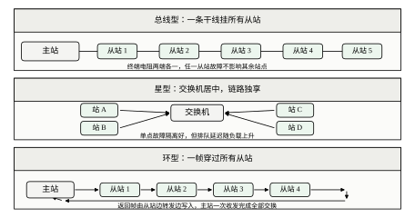
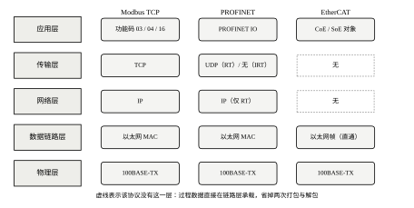
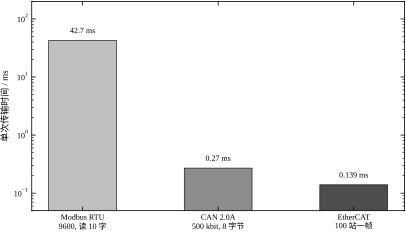
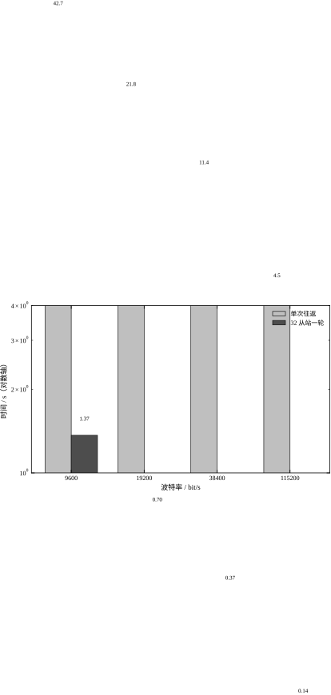
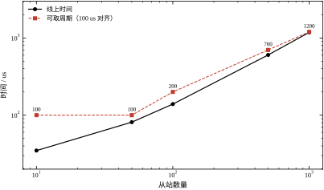
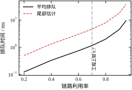
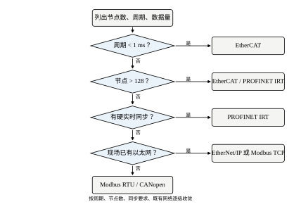
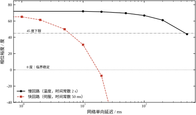
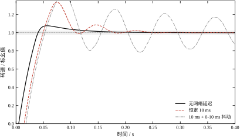
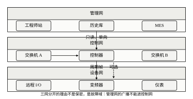

第一个现象是“线接好了，数据却不新鲜”。某条产线的温度回路在本地控制时表现正常，把传感器改到远程 I/O 站之后，操作员觉得响应“慢半拍”。查程序没有问题，查参数也没有问题，问题出在轮询：主站每 1.37 s 才把所有从站读一遍（表 89-3），回路拿到的偏差值平均滞后半轮，相当于凭空加了 0.7 s 的纯滞后。
第二个现象是“同一段网络，慢回路没事，快回路发散”。设备上同时跑温度回路与伺服轴，网络延迟 10 ms。温度回路的超调几乎没有变化（0.2%）；伺服轴的速度环超调从 7.7% 涨到 33.5%，积分误差涨了 77.7%（表 89-11）。延迟的绝对量一样，后果差了两个数量级，因为两个回路的穿越频率差了 66 倍。
第三个现象是“链路不忙，抖动却很大”。交换机端口利用率不到 30%，工程师认为带宽绰绰有余，但周期数据的到达时刻在 0 到 20 ms 之间跳动。原因是链路上混着大文件传输与视频流，周期帧在每个交换机出口排队，排队时间不由平均负载决定，而由“恰好同时到达”的概率决定。利用率 0.7 时平均排队 1.17 ms，尾部可达 4.67 ms（表 89-6）。
三个现象对应三件事：轮询周期决定数据新鲜度，穿越频率决定延迟要不要紧，排队决定抖动。它们都不属于控制算法的范畴，却在现场反复出现。
第 86 章讨论实时软件的任务划分与调度，回答“多个周期任务怎么共享一个 CPU”；第 87 章讨论嵌入式控制器，回答“一颗 MCU 在一拍内怎么把 FOC 算完”；第 88 章讨论 PLC，回答“一次扫描里五个阶段怎么分配时间”。本章讨论这些计算单元之间的连接：数据从 A 站到 B 站要多久，这个时间有多不确定，以及不确定性如何进入闭环。
与前几章最大的差别是“延迟不再由你一个人决定”。单机系统里，扫描周期由程序规模与 CPU 决定，工程师可以把它算准；一旦跨上网络，延迟里就混进了交换机队列、其他节点的突发流量、重传与协议栈开销，这些量既不由本回路控制，也很难离线复现。本章的方法因此分成两半：一半是把延迟算清楚，另一半是把不确定性管住。
本章不重复 PID 的整定（见第 44、106 章），不展开网络化控制的理论判据（见第 82 章），也不讲信息安全的攻防（只在小节里划边界）。采样定理与零阶保持在第 4、85 章已经讲过，这里只引用结论。
把一条控制回路从“本地接线”改成“网络连接”，物理上只多了一段传输，工程上却同时引入了三种效应。
第一种是延迟。数据要打包、排队、传输、解包，控制量从算出到生效多花一段时间。这段延迟与过程本身的纯滞后作用相同，都消耗相位裕度，只是它通常更小、更容易被忽视。
第二种是抖动。延迟不是一个常数，而是一个分布。同一帧在这一拍用 2 ms 到达，下一拍可能用 18 ms。控制器按固定周期计算，却不知道自己的输出何时生效，等效于每一拍都有一点点随机的附加滞后。
第三种是丢失。帧可能因为校验错误、缓冲区溢出、链路切换而丢掉。丢掉之后执行器保持上一拍的值，回路短暂开环。单帧丢失通常无碍，连续丢失才会出事。
延迟、抖动、丢失这三种效应，对应的处置手段完全不同：延迟要“算”，抖动要“压”，丢失要“防”。把三者混为一谈，是选型与调试中最常见的错误。
工业通信不是一种技术，而是三代技术并存。图 89-8 把三类以太网协议的层次画在一起，可以看到它们的分歧点在哪里。
不过先说清楚一件事：网络不是一个平面，而是分成三层。表 89-1 是这三层的分工，混层是现场最常见的架构错误——把视频监控接到控制环网上，一个文件下载就能让整条线的周期帧抖起来。
表 89-1 工业网络三个层次的分工
| 层次 | 典型周期 | 主要协议 | 连接对象 |
|---|---|---|---|
| 现场层 | 0.1–10 ms | EtherCAT、Profinet IRT、CAN | 驱动器、远程 I/O、传感器 |
| 控制层 | 10–500 ms | Profinet RT、EtherNet/IP、Modbus TCP | PLC、DCS、HMI 之间 |
| 管理层 | 秒级 | OPC UA、MQTT、SQL | MES、SCADA、云平台 |
分层的判据是“延迟容忍度”，不是“物理位置”。同一台柜子里的 PLC 与 HMI 之间如果只传画面数据，可以走控制层；如果传的是联锁信号，就必须走现场层。判断标准只有一条：这段数据晚到 10 ms 会不会出事。
第一代是串行现场总线，代表是 Modbus RTU 与 Profibus。它把数据挂在一条 RS-485 双绞线上，主站轮询、从站应答。速率低（9.6 到 115.2 kbit/s），但时序完全确定：同一时刻只有一对设备在说话，不会碰撞。代价是慢，9600 bit/s 下读 10 个寄存器要 42.67 ms。
第二代是 CAN 一类的事件总线，代表是 CAN 2.0 与 CANopen。它用优先级仲裁代替轮询，高优先级的帧可以抢占低优先级的发送机会。500 kbit/s 下一个 8 字节帧约 222 µs，最坏含位填充 270 µs。它适合大量短报文（传感器、驱动器状态），不适合大块数据传输。
第三代是工业以太网，代表是 EtherCAT、Profinet、EtherNet/IP。物理层是标准的 100 Mbit/s 以太网，区别在协议栈：EtherNet/IP 走完整 TCP/IP，Profinet RT 走 UDP，Profinet IRT 与 EtherCAT 干脆绕过 IP 层，把过程数据直接塞进以太网帧。绕过的层数越多，抖动越小，确定性越好。
表 89-2 把三代技术放在一起。表中的“确定性”一列不看速率，只看最坏延迟有没有上界：Modbus RTU 慢但可算，标准 TCP/IP 快但不可算，EtherCAT 又快又可算。
表 89-2 三代工业总线技术的定位
| 代际 | 代表协议 | 速率 | 典型周期 | 确定性 |
|---|---|---|---|---|
| 第一代 | Modbus RTU、Profibus DP | 9.6 k–12 Mbit/s | 10–100 ms | 好，轮询无碰撞 |
| 第二代 | CAN 2.0、CANopen | 125 k–1 Mbit/s | 1–10 ms | 好，仲裁可算 |
| 第三代 | EtherCAT、Profinet IRT | 100 Mbit/s | 0.1–4 ms | 好，时隙或逻辑环 |
| 旁支 | Modbus TCP、EtherNet/IP | 100 Mbit/s | 10–50 ms | 差，TCP 重传不可算 |
三代的边界不在“先进”，而在“周期”。10 ms 以上的场合，Modbus RTU 便宜可靠；1 到 10 ms 的场合，CAN 与 Profinet RT 够用；1 ms 以下、要求微秒级同步的场合，只有 EtherCAT 与 Profinet IRT 可选。图 89-9 把这套判断画成流程。

三种拓扑的差别值得单独说一句。总线型（图 89-3 上）所有站挂在同一条干线上，任一站的支线断开只影响自己，但干线断开全段失效；星型（中）靠交换机做点对点，单点故障隔离最好，代价是每个端口都可能排队；环型（下）在物理上是一根线首尾相连，一帧穿过所有从站，主站一次收发就完成全部交换，断一处还能从另一侧绕回。选拓扑本质上是在“故障域”与“延迟”之间做交换。

本章按“算—设—调—落地”四条线组织，读者可以按角色选读。
做选型的读者，先看 §89.1.4 与 §89.11.7，把节点数、周期、数据量三个数填进图 89-9 的流程，得到一两个候选，再回 §89.3 核对带宽与利用率。
做设计的读者，重点在 §89.2 与 §89.6。前者给出延迟、排队、同步的计算式，后者给出延迟与抖动如何吃裕度。两节合起来回答一个问题：这条网络能不能撑住这个回路。
做调试的读者，直接看 §89.8 与 §89.10.4。前者是测量与整定的顺序，后者是“现象—原因—处置”的对照表。
做评审的读者，看 §89.9 与 §89.11。前者讲优化能拿到什么、代价是什么，后者讲各类总线的适用边界。
延迟、抖动、确定性、刷新率、吞吐，这五个词在手册里经常混用，含义却不同。
延迟是“一帧从发出到被用到”的时间，是一个标量，通常给平均值或最坏值。抖动是延迟的波动幅度，是一个分布宽度。确定性是“最坏延迟有上界”这一性质，与延迟大小无关：一条总是慢 10 ms、但每次都不多不少的链路，确定性很好，延迟却很大。
刷新率是“同一份数据多久更新一次”，单位是 Hz。它不等于帧率：一帧可以携带 64 个轴的数据，帧率 1 kHz 时每个轴的刷新率也是 1 kHz；但如果把 64 个轴分成 4 帧轮发，帧率仍是 1 kHz，每个轴的刷新率就降到 250 Hz。
吞吐是单位时间能搬多少字节，单位是 bit/s 或 帧/s。吞吐高不代表延迟低：一条 1 Gbit/s 的链路如果排队 50 ms，吞吐再高也没用。反过来，一条 100 kbit/s 的链路只要不排队，延迟可以只有几毫秒。
分清这五个词，后面所有计算才不会张冠李戴。
人对时间的直觉在毫秒尺度上并不可靠，先立三把尺子。
第一把是人的反应。眼睛看到、手做出动作，全程约 200 ms；触摸屏点下去的视觉反馈，50 ms 以内算“跟手”。用这把尺子量网络，10 ms 的延迟人完全无感。
第二把是控制器的节拍。PLC 一次扫描 10 ms 是常态，第 86 章的实时任务周期常在 1 ms 量级，第 87 章的电流环在 50 到 100 µs。用这把尺子量网络，10 ms 延迟等于一个 PLC 扫描周期，等于十个伺服任务周期。
第三把是对象的动态。温度对象的时间常数以秒计，伺服速度环以几十毫秒计。用这把尺子量网络，10 ms 对前者是千分之五，对后者是五分之一。
三把尺子给出的结论完全不同：同一段 10 ms 的网络，对人“感觉不到”，对 PLC“刚好一拍”，对温度“无关紧要”，对伺服“吃掉两成动态”。§89.1.1 的第二个现象，本质就是拿第一把尺子的结论去套第三把尺子的场合。
工程讨论里说“延迟大”或“延迟小”，必须先说清用哪把尺子。没有尺子的形容词，是现场争论最常见的起点。
边界要先划清，否则读者会期待错东西。
本章不推导协议。Modbus 的功能码、CAN 的仲裁机制、EtherCAT 的状态机，只讲到“影响时序的那一层”，报文格式与寄存器定义留给厂商手册。需要写驱动的人，本章不够用。
本章不做芯片选型。从站控制器用哪家的、主站用软的还是硬的，只在“延迟差多少”的层面讨论，不比较具体型号。型号更新太快，写进书里两年就过期。
本章不涉及信息安全。工业网络的功能安全与信息安全是另一门学问，本章只提一句：隔离既是实时性的手段，也是安全的手段，但两者的设计目标不同。
本章也不做完整的网络规划。地址怎么分、VLAN 怎么划、冗余怎么配，只给原则与清单，具体方案随项目而变。
划清边界的好处是每一节都能落到实处。本章承诺的是：读完能算清一条回路的延迟预算、能判断一段网络够不够用、能在现场按四步查出问题出在哪。三件事做到，本章的目的就达到了。
串行总线的传输时间按字符算。一个字符包括起始位、8 个数据位、停止位，共 10 位。传输一位的时间是波特率的倒数，所以一个字符的时间为
t_{\rm char}=\frac{n_{\rm bits}}{R}=\frac{10}{R} \tag{89-1}
波特率 9600 bit/s 时，t_{\rm char}=1.042 ms。这个数字是所有串行总线估算的基石：帧有多少个字符，就乘多少。
一次 Modbus RTU 事务包括请求、从站处理、响应三段。请求帧固定 8 字节，响应帧为 5+2n 字节（地址、功能码、字节数、2n 字节数据、CRC）。两端各留 3.5 个字符的帧间隔，按 7 个字符计，于是
t_{\rm tx}=\frac{10\left(L_{\rm req}+L_{\rm resp}+7\right)}{R}+t_{\rm slave} \tag{89-2}
读 10 个寄存器时，L_{\rm req}=8、L_{\rm resp}=25，合计 40 个字符，加 1 ms 从站处理时间，9600 bit/s 下为 42.67 ms。32 个从站轮一遍要 1.37 s。把波特率提到 115200，单次降到 4.47 ms，一轮 0.14 s（表 89-3）。

图 89-1 把三类总线的单次传输时间放在对数轴上。Modbus RTU 的 42.67 ms 与 EtherCAT 的 0.139 ms 差了 300 倍，这个差距不是“快一点慢一点”，而是“能不能做闭环”的分界。

图 89-2 给出四个波特率下的单次往返与整轮时间。两条柱子都随波特率线性下降，没有拐点：串行链路的传输时间就是字符数除以速率，提高波特率是唯一的加速手段。工程上的上限通常不是波特率，而是电缆长度与抗扰度——115200 bit/s 在屏蔽双绞线上只能跑几百米。
表 89-3 是图 89-2 的数字版，另外加了一列“单次往返”，方便按回路数估算。
| 波特率 / bit/s | 单次往返 / ms | 32 从站一轮 / s | 单站刷新率 / Hz |
|---|---|---|---|
| 9600 | 42.67 | 1.37 | 0.73 |
| 19200 | 21.83 | 0.70 | 1.47 |
| 38400 | 11.42 | 0.37 | 2.74 |
| 115200 | 4.47 | 0.14 | 7.22 |
表 89-3 Modbus RTU 读 10 个寄存器的轮询时间（32 从站）
最后一行值得记住：即使把波特率拉到 115200，单个从站的刷新率也只有 7.22 Hz。这意味着 Modbus RTU 只能用于时间常数在秒级的慢回路，用它做伺服或快速压力环是不合适的。
CAN 的传输时间不按字符算，按位算。标准帧（2.0A）的固定开销为 47 位：帧起始 1 位、仲裁段 12 位、控制段 6 位、CRC 16 位、应答 2 位、帧结束 7 位、帧间隔 3 位。数据段为 8N 位。
CAN 还有一条别处没有的规则：位填充。发送器每遇到 5 个连续同值位，就插入 1 个反值位，保证接收方能从跳变中恢复时钟。最坏情况下，需要填充的位数为
n_{\rm CAN}=47+8N+\left\lfloor\frac{34+8N-1}{4}\right\rfloor \tag{89-3}
N=8 时标称 111 位、最坏 135 位。500 kbit/s 下分别是 222 µs 与 270 µs。
表 89-4 给出三档数据长度下的位数与时间。填充位数随 N 增长得比数据位慢，所以短帧的相对开销更大：2 字节帧标称 63 位、最坏 75 位，多出 19%；8 字节帧只多出 22%。
| 数据长度 / 字节 | 标称位数 | 最坏位数 | 500 kbit/s 标称 / µs | 最坏 / µs |
|---|---|---|---|---|
| 2 | 63 | 75 | 126 | 150 |
| 4 | 79 | 95 | 158 | 190 |
| 8 | 111 | 135 | 222 | 270 |
表 89-4 CAN 2.0A 标准帧的位数与传输时间（500 kbit/s）
位填充带来的 22% 差异在工程上不能忽略。如果按标称值算带宽，实际负载会超出 20% 以上；标准做法是按最坏值留余量，或者用“每帧 130 位”这个经验数。
CAN 的另一个特点是仲裁。11 位标识符同时表示内容与优先级，数值越小优先级越高。两个站同时发送时，逐位比较，先出现显性位（0）的站获胜，输的站自动退让并在下一帧重发。这个过程不破坏任何一帧，也不产生随机退避，因此最坏延迟可以算出来。
代价是“非抢占”：一旦高优先级帧开始发送，低优先级帧必须等它发完（最长 135 位，270 µs）。所以 CAN 的抖动上界大致等于一帧的传输时间。对周期 10 ms 的回路，270 µs 只占 2.7%，可以接受；对周期 1 ms 的回路，占 27%，就必须要算清楚了。
EtherCAT 的传输模型与前面两类都不同。它不发“一问一答”，而是主站发一帧，这帧依次穿过所有从站，每个从站在经过时把自己的数据写入帧内对应位置，最后回到主站。主站一次收发完成全部交换。
一帧的线上字节数为前导 8、以太网头 14、过程数据（2 字节工作计数器加负载）、FCS 4、帧间隔 12。传输时间为
T_{\rm cyc}=\frac{8L_{\rm wire}}{R}+n\,t_{\rm fwd}+T_{\rm master} \tag{89-4}
其中 L_{\rm wire} 是线上字节数，n 是从站数，t_{\rm fwd} 是每站转发延迟（典型 1 µs），T_{\rm master} 是主站开销（典型 20 µs）。
表 89-5 按这个式子算了五档从站数。100 站时线上 139.2 µs，可取 200 µs 周期；1000 站时线上 1183.2 µs，只能取 1.2 ms。这个结果解释了一个常见误解：EtherCAT 快，但不是无限快，从站数一多，每站 1 µs 的转发延迟就会累加成毫秒。
表 89-5 EtherCAT 周期随从站数的变化
| 从站数 | 线上字节 | 线上时间 / µs | 可取周期 / µs |
|---|---|---|---|
| 10 | 60 | 34.8 | 100 |
| 50 | 140 | 81.2 | 100 |
| 100 | 240 | 139.2 | 200 |
| 500 | 1040 | 603.2 | 700 |
| 1000 | 2040 | 1183.2 | 1200 |
图 89-7 把线上时间与可取周期画在双对数轴上。两条线在 100 站附近分开：线上时间还在 139 µs，可取周期已经被对齐到 200 µs。对齐是工程惯例，实际控制器大多只支持 100 µs、125 µs、250 µs 这样的整数档，不会给你 139 µs 这种周期。

从站数超过 500 之后，曲线明显变陡。原因是负载字节随站数线性增长，线上时间也跟着线性增长，而可取周期必须向上对齐，于是每加一档都要多等一截。1000 站时线上时间 1183 µs 已经逼近 1.2 ms 周期，利用率接近 99%，没有任何余量留给非周期流量。
这就是为什么大型设备要分网段：把 1000 个站拆成两个 500 站的环，每个环 603 µs，都能跑 700 µs 周期，总周期反而比单环 1.2 ms 短。分段的代价是多一张网卡与一份主站授权。
一帧数据从源站的应用层到目标站的应用层，要经过四段时间，它们的作用不同，不能简单相加了事。
传输时间是帧长除以速率，见式 (89-1) 至 (89-4)。它由协议与负载决定，是确定的部分。
排队时间是帧在交换机或主站缓冲里等待的时间。它由链路利用率与流量突发性决定，是随机部分的主要来源。
处理时间是协议栈打包、解包、校验的时间。硬件协议栈（如 EtherCAT 从站控制器）通常小于 1 µs，软件协议栈（如 Linux 上的 TCP/IP）可能到几十微秒。
传播时间是电信号在电缆上的飞行时间，约 5 ns/m。100 m 电缆 0.5 µs，通常可以忽略；但在长距离干线或跨厂区光纤上，它会变成可观的一项。
四段相加得到总延迟
T_d=T_{\rm tx}+T_{\rm q}+T_{\rm proc}+T_{\rm prop} \tag{89-5}
工程上真正难估的是 T_{\rm q}。前三项都能从手册查到，T_{\rm q} 只能靠排队论估算或现场测量。
把交换机的一个出口看成一个服务台：帧按到达率 \lambda 进来，按服务率 \mu 出去，利用率 \rho=\lambda/\mu。帧长固定时，排队系统是 M/D/1，平均排队时间为
W=\frac{\rho}{2\left(1-\rho\right)}\,T_s \tag{89-6}
其中 T_s=1/\mu 是一帧的服务时间。
这个式子的形状比数值更重要。\rho 从 0.5 涨到 0.9，分子翻倍、分母缩到五分之一，排队时间涨 9 倍。表 89-6 给出服务时间 1 ms 时的结果：利用率 0.5 时平均排队 0.50 ms，0.9 时 4.50 ms，0.95 时 9.50 ms。
| 利用率 | 平均排队 / ms | 尾部估计 / ms |
|---|---|---|
| 0.20 | 0.12 | 0.50 |
| 0.40 | 0.33 | 1.33 |
| 0.50 | 0.50 | 2.00 |
| 0.60 | 0.75 | 3.00 |
| 0.70 | 1.17 | 4.67 |
| 0.80 | 2.00 | 8.00 |
| 0.90 | 4.50 | 18.00 |
| 0.95 | 9.50 | 38.00 |
表 89-6 排队延迟随链路利用率的变化（M/D/1，服务时间 1 ms）

图 89-4 把平均排队与尾部估计画在一起，纵轴是对数。两条线在 0.5 以下几乎重合，0.8 之后迅速分开。工程上把 0.7 当作上限（图中的竖线），理由是超过 0.7 之后，尾部延迟开始以“几倍平均”的速度增长，而控制回路关心的是尾部而不是平均。
“尾部估计”那一列是按平均值 4 倍粗估的，不是严格的分位数。严格算法要用排队论的尾概率公式，工程上没必要：留 30% 余量比精确算尾部更省事，也更保险。
网络延迟加在回路里，作用与过程纯滞后相同。它在穿越频率处产生的相位损失为
\Delta\varphi=\omega_c T_d \tag{89-7}
其中 \omega_c 是穿越频率（rad/s），T_d 是总延迟（s）。这个式子是本章最重要的一条，因为它把“毫秒”换算成了“度”。
慢回路的 \omega_c=1.00 rad/s，100 ms 延迟只损失 5.7°；快回路的 \omega_c=66.6 rad/s，同样 100 ms 损失 381°，早就转了好几圈。这就是 §89.1.1 第二个现象的定量解释。
把式 (89-7) 展开到完整的相位表达式，可以得到含网络延迟的裕度公式
\varphi_m=180^\circ-\arctan\left(\omega_c\tau\right)-\arctan\frac{1}{\omega_cT_i}-\omega_c\left(L+\frac{T_{\rm scan}}{2}+T_{\rm net}\right) \tag{89-8}
式中的 L 是过程纯滞后，T_{\rm scan}/2 是采样引入的半拍延迟（见第 85 章），T_{\rm net} 是网络单向延迟。四项里只有最后一项是本章新增的。
帧丢了之后执行器怎么办？工业上几乎所有的默认做法是“保持上一拍的值”，即
u(k)=u(k-1) \tag{89-9}
这条规则隐含一个假设：上一拍的控制量在当前仍然大致正确。对慢过程，这个假设成立；对快过程，保持 20 ms 可能已经错过了整个动态。
保持的后果可以分两种情况看。对稳定过程，短时保持只让回路短暂开环，误差缓慢积累，恢复后积分项会把它补回来。对不稳定过程（如倒立摆、某些放热反应），保持期间状态按开环极点发散，丢包长度直接决定能否拉回。
单帧丢包的危害常被高估，连续丢包的危害常被低估。5% 的单帧丢失让 IAE 从 0.0455 涨到 0.0458，几乎看不出；同样 5% 的丢失率，如果每次连丢 20 帧，IAE 涨到 0.0703，增加 53.5%，超调从 33.7% 抬到 43.8%（表 89-12）。决定后果的是“连续丢多久”，不是“总共丢多少”。
多轴协同、分布式采集、事件顺序记录，都要求各站的时钟一致。同步误差由两部分组成：每次同步的残差，以及两次同步之间的漂移累积。
\varepsilon=\varepsilon_{\rm sync}+\Delta f\,T_{\rm sync} \tag{89-10}
其中 \varepsilon_{\rm sync} 是单次同步误差，\Delta f 是晶振相对频率偏差（ppm），T_{\rm sync} 是同步间隔。
普通晶振的偏差约 50 ppm，即每秒钟漂 50 µs，一天漂 4.32 s。这个数字说明“不同步”在工业现场不是小问题：两台设备各自上电运行一天，时间戳能差出好几秒，事件顺序完全无法还原。
表 89-7 对比了五种同步方式。NTP 的单次误差 5 ms，一天最大偏差 5.05 ms；SNTP 在局域网内能到 1 ms；软件时间戳的 PTP 约 100 µs；硬件时间戳的 PTP 到 1 µs，一天 51 µs。
| 同步方式 | 单次误差 / µs | 一天最大偏差 |
|---|---|---|
| 无同步（仅晶振） | 0 | 4.32 s |
| NTP | 5000 | 5.05 ms |
| SNTP（局域网） | 1000 | 1.05 ms |
| PTP（软件时间戳） | 100 | 150 µs |
| PTP（硬件时间戳） | 1 | 51 µs |
表 89-7 五种时间同步方式的误差（晶振 50 ppm，同步间隔 1 s）
表里“一天最大偏差”一列把漂移算进去了，所以 PTP 硬件时间戳不是 1 µs 而是 51 µs。这个细节容易被忽略：同步精度再高，只要间隔是 1 s，两次同步之间仍会漂 50 µs。要把日偏差压到微秒级，同步间隔必须缩到 20 ms 以内。
带宽需求由三个数决定：节点数 N、每节点每周期字节数 L、周期频率 f_{\rm cyc}。
B_{\rm req}=N\,L\,f_{\rm cyc}\times 8 \tag{89-11}
除以链路速率得到利用率
\rho=\frac{B_{\rm req}}{B_{\rm link}} \tag{89-12}
这条式子只算周期流量。工程上还要给非周期流量（参数下载、诊断、报警）留余量，通常按周期流量占 30% 估算，剩下 70% 留给其他用途。
表 89-8 按“周期通信占 30%”算了各类总线在最小周期下的过程数据量。EtherCAT 在 100 µs 周期下 375 字节，Profinet IRT 在 250 µs 下 938 字节，Modbus RTU 在 10 ms 下只有 43 字节。
表 89-8 各类总线的周期、节点数与过程数据容量
| 总线 | 最小周期 / ms | 最大节点 | 每周期过程数据 / 字节 |
|---|---|---|---|
| Modbus RTU | 10 | 32 | 43 |
| CAN 2.0A | 1 | 110 | 38 |
| Modbus TCP | 10 | 64 | 37500 |
| Profinet RT | 1 | 128 | 3750 |
| Profinet IRT | 0.25 | 128 | 938 |
| EtherCAT | 0.1 | 1000 | 375 |
这张表要横着看，不能只看一行。Modbus TCP 在 10 ms 下能带 37500 字节，看着比 EtherCAT 多得多，但它的周期是 10 ms，抖动是毫秒级，做不了快回路；EtherCAT 在 100 µs 下只有 375 字节，看着很少，但每 100 µs 就有 375 字节，折算成吞吐是 30 Mbit/s，而且抖动小于 1 µs。
当一帧装不下所有数据时，要分帧轮发。若把 N 个节点的数据分成 n 帧轮发，每个节点的刷新周期变成
T_{\rm refresh}=n\,T_{\rm cyc} \tag{89-13}
刷新率降到 1/n，但每帧的负载也降到 1/n，链路利用率不变。这个交换在 §89.9.2 会展开：什么时候该分帧，什么时候该加带宽，判据是“回路的采样周期”而不是“链路的吞吐”。
式 (89-5) 把延迟分成四段，工程上要能把它们拆开，否则不知道该改哪一段。
用 64 轴包装线的数字做例子。单周期 188.5 µs 里，线上传输 100.5 µs 占 53%，从站转发 68 µs 占 36%，主站处理 20 µs 占 11%，传播 0.3 µs 占 0.2%。
四段的占比决定了优化顺序。转发占三成六，说明“站太多”是主要成本；线上占五成三，说明“数据太大或带宽太低”。两段加起来近九成，主站与传播的优化空间很小。
拆分方法有三步。第一步，只接一个从站跑空帧，测出的周期就是“主站 + 线上 + 一次转发”，用它减去空帧的理论线上时间，得到主站处理时间。第二步，逐步加站，每加一站周期增加的量就是单站转发时间。第三步，把数据量加倍，周期的增量就是线上时间的增量。
三步测完，四段就都有了。若第一步测不出来（主站处理时间太小，被抖动淹没），可以直接按经验估：软主站 20 µs 量级，硬主站 5 µs 以内。
拆分之后再看优化。转发时间长，减站或换更快的从站芯片；线上时间长，加带宽或压数据；主站时间长，换硬主站；传播时间长（几乎不会发生），只能缩短距离。
这段拆分的意义在于避免“一把抓”。现场常说“网络慢”，拆开之后往往发现是某一段占了大头，改那一段就够了，不必换整套。
设计一条工业网络，动手画拓扑之前，必须先有四个数：节点数、每节点每周期要传多少字节、每个回路要求的刷新周期、最长电缆距离。这四个数缺一个，后面的计算就只能“先按经验估”，而经验恰恰是本章想替换掉的东西。
四个数里最容易漏的是“每节点字节数”。一台伺服驱动器要传的不只是位置给定与位置反馈，还有状态字、控制字、转矩、电流、报警码、诊断码。§89.3.2 的表 89-9 给了常见站型的字节数，查表比逐台翻手册快。
图 89-9 把五个步骤串成一条判断链。前两步是算数，第三步开始有取舍，第四步看现场条件，第五步是复核。任何一步算出来不合，回到上一步换方案，而不是硬着头皮往下做。

流程里有两个回退箭头值得注意。带宽不够时先考虑降周期而不是换总线，因为换总线意味着换主站、换从站、换组态软件；同步精度不够时先缩短同步间隔，再考虑上硬件时间戳。
节点清单不是设备清单。设备清单按采购单元列，节点清单按“每周期要交换的数据块”列。同一台伺服驱动器可能占两个节点（一个过程数据通道、一个诊断通道），也可能只占一个但字节数较大。
表 89-9 是一份可用的清单模板。六列覆盖了后面所有计算需要的信息：周期字节数供带宽计算，允许刷新周期供分帧判断，是否需要同步供时钟设计，失效影响供拓扑选择。
表 89-9 节点清单模板（每行是一类站型，实际项目按台数展开）
| 站型 | 每周期过程数据 / 字节 | 典型刷新周期 / ms | 需要时钟同步 | 失效影响 | 备注 |
|---|---|---|---|---|---|
| 伺服驱动器（位置模式） | 16 | 1 | 是（多轴插补） | 单轴停 | 含状态字、控制字、位置、转矩 |
| 伺服驱动器（转矩模式） | 12 | 0.5 | 否 | 单轴停 | 高频，常单独成环 |
| 远程 I/O（16 点） | 2 | 10 | 否 | 局部失控 | 可降级为保持 |
| 变频器 | 8 | 10 | 否 | 单机停 | 含频率给定、电流、故障码 |
| 智能仪表（温度） | 4 | 100 | 否 | 单点失准 | 本身响应慢 |
| 安全模块 | 4 | 10 | 是（事件顺序） | 联锁动作 | 需安全认证链路 |
| 视觉与扫码 | 64 | 20 | 是（时间戳对齐） | 判废 | 非周期特征明显 |
| 人机界面 | 32 | 100 | 否 | 仅监视 | 可走非周期通道 |
清单里“失效影响”一列常被当作装饰，实际它决定拓扑。单轴停可以容忍线型（一个站坏不影响其余），联锁动作不能容忍环型（断一环全网重组，重组期间所有站失联）。这一列在后面两步还会再用。
列清单时还有一个容易忽略的量：诊断数据。现代伺服驱动器的诊断对象动辄上百字节，这些数据不该进周期通道。把它们放到非周期通道（邮箱、参数通道），周期负载能降一大截。
有了清单，带宽是一行乘法：
B_{\rm req}=\sum_i N_i L_i f_i\times 8 \tag{89-14}
这是把式 (89-11) 按站型展开，因为同一网络上的站刷新周期往往不同。N_i 是第 i 类站的台数，L_i 是每周期字节数，f_i=1/T_i 是刷新频率。
算出来的 B_{\rm req} 不能直接与链路速率比。链路还要承载帧头、前导码、帧间隙、非周期流量，实际可比的是利用率 \rho，工程上限取 0.7（§89.2.5）。
以 64 轴包装线为例。64 台伺服每台 16 字节，96 点远程 I/O 每点 2 字节，过程数据 1216 字节。EtherCAT 一帧装完，帧长 1256 字节，含前导与帧头 8 字节、以太网头 14 字节、工作计数器 2 字节、CRC 4 字节、帧间隙 12 字节。
表 89-10 64 轴包装线的 EtherCAT 带宽预算
| 分项 | 数值 | 说明 |
|---|---|---|
| 伺服过程数据 | 1024 字节 | 64 台 × 16 字节 |
| 远程 I/O 过程数据 | 192 字节 | 96 点 × 2 字节 |
| 帧开销 | 40 字节 | 前导 8 + 以太网头 14 + 计数器 2 + CRC 4 + 间隙 12 |
| 帧长合计 | 1256 字节 | 一帧装完，不分帧 |
| 线上传输 | 100.5 µs | 1256 × 8 / 100 Mbit/s |
| 从站转发 | 68 µs | 68 站 × 1 µs |
| 主站处理 | 20 µs | 组帧与解析 |
| 单周期合计 | 188.5 µs | 线上 + 转发 + 主站 |
188.5 µs 是这条线的地板。取 1000 µs 周期占 18.8%，取 500 µs 占 37.7%，取 250 µs 占 75.4%。前两档都在 0.7 以内，第三档超了。
所以这条线的周期只能在 500 µs 与 1000 µs 之间选。选哪个不由带宽决定，由回路的采样周期决定：包装机的色标跟踪要求 2 ms 采样，500 µs 是 4 倍过采样，够用；换成 1000 µs 只有 2 倍，色标相位会有半个周期的模糊。
这段计算有两点要记住。转发时间按每站 1 µs 估，实际取决于从站芯片，老式控制器可能 2 到 3 µs；主站处理 20 µs 是软主站（基于通用网卡）的量级，硬主站（专用芯片）能压到 5 µs 以内。
拓扑由三件事决定：距离、故障域、布线成本。
线型（Modbus RTU、CAN、Profibus DP）最省线，一条干线挂到底，适合从站分散但每站数据量小的场合。缺点是干线一处断，后面全掉；终端电阻少一个，反射会让整条线时好时坏。
星型（交换式以太网）故障域最小，一个端口坏只掉一个站，适合设备集中、需要逐台诊断的场合。缺点是每个站一根线回交换机，线缆与端口成本随站数线性增长，64 轴就要 64 根线。
环型（EtherCAT 冗余、Profinet MRP）用一根额外的线换故障容忍，断一处仍能通信，代价是故障时周期变长，因为帧要绕远路。对不能停的产线，这个代价通常值得付。
图 89-3 已经画过这三种拓扑。这里补一条现场判据：站间距超过 100 m 时，不要用铜缆以太网硬撑，直接上光纤。光纤环网在冶金、港口、风电里是标准做法，不只是“高端选项”。
不是所有网络都需要同步。表 89-9 里只有伺服插补、安全事件顺序、视觉时间戳三类标了“需要”。判据是“两个站的动作是否需要在一个共同时间轴上比较”。
单轴定位不需要同步，各轴用自己的编码器就够了。多轴插补需要，因为轨迹在同一时间轴上参数化，轴间 100 µs 的相位差会让圆弧变成椭圆。事件顺序记录也需要，因为要判断“急停先动还是安全门先开”，两站时钟差 1 ms，因果就说不清。
同步方式按精度选（表 89-7）。毫秒级用 NTP 就够，微秒级必须 PTP 或 EtherCAT 分布式时钟。选定方式后还要定同步间隔：按式 (89-10)，晶振 50 ppm 时，要把两次同步之间的漂移压到 10 µs，间隔不能超过 200 ms。
EtherCAT 的分布式时钟把参考时钟放在第一个支持该功能的从站上，其余从站测量自己与参考的偏差并补偿。补偿后的同步误差在 100 ns 量级，代价是从站需要支持分布式时钟的芯片，且参考站要选在拓扑靠前的位置。
算完不等于做完，还要留三份余量。
第一份是带宽余量，\rho\le0.7。这条线在 250 µs 下已经 75.4%，一旦加了诊断流量或扩两台轴就会超。现场表现是“偶发丢帧”而不是“完全不通”，最难查。
第二份是周期余量。设计的周期要比回路要求的最短采样周期再快 2 到 4 倍。只快 1.2 倍时，任何一次重传或一次调度抖动都会把刷新率拖到要求以下。
第三份是抖动余量。周期抖动要小于周期的 10%。500 µs 周期对应 50 µs 抖动上限，超过这个量，采样时刻的不确定性已经与半拍延迟相当（§89.2.6）。
三份余量都要写进设计文档，而不是留在工程师脑子里。文档里至少要有：节点清单（表 89-9 的形式）、带宽预算（表 89-10 的形式）、选定周期与理由、同步方式与间隔、验收实测的周期抖动与丢帧率。
验收指标建议写成可测的数字：连续 8 h 周期抖动小于 10%、丢帧率低于 10^{-6}、同步误差小于 1 µs。这三项在现场用抓包工具与示波器都能测，比“通信正常”这种描述有用得多。
把五步走一遍，仍以 64 轴包装线为例。
第一步列清单：64 台伺服（16 字节、1 ms）、96 点 I/O（2 字节、10 ms）、1 台视觉（64 字节、20 ms）、1 台人机界面（32 字节、100 ms）。按 500 µs 周期归一，伺服数据每拍都传，I/O 数据每 20 拍传一次。
第二步算带宽：过程数据 1216 字节，帧长 1256 字节，单周期 188.5 µs。500 µs 周期占 37.7%，1000 µs 占 18.8%。
第三步定拓扑：设备沿输送线分布，总长 60 m，单轴故障可停线，选线型。EtherCAT 的逻辑环在线型拓扑上自然成立，不额外做冗余。
第四步定时钟：多轴插补需要同步，选 EtherCAT 分布式时钟，参考站取第一台伺服，同步周期与通信周期一致，都是 500 µs。
第五步留余量：37.7% 的利用率不高，可以试着压到 400 µs；400 µs 下占 47.1%，加上诊断流量后接近 0.6，仍在 0.7 以内。最终取 500 µs，把余量留给后续扩轴。
结论是一句话：EtherCAT、线型、500 µs 周期、分布式时钟同步、利用率 37.7%。这句话足以让采购下单、让电气出图、让软件建档。
五步看着简单，实际做的时候有三个高频错误。
第一个是把平均延迟当延迟。手册给的常是平均值，而闭环由最坏值决定。10 ms 平均、20 ms 峰值的链路，按 10 ms 算出来的 30.9° 裕度是假的，实际要按 20 ms 算，那已经是 -7.3°。
第二个是只算线上时间，漏掉转发与主站处理。1256 字节在 100 Mbit/s 上只有 100.5 µs，看着很宽裕；加上 68 站转发 68 µs 与主站 20 µs，总时间变成 188.5 µs，几乎翻倍。按 100.5 µs 去算 250 µs 周期的利用率，会得出 40% 的错误结论，实际是 75.4%。
第三个是按峰值带宽而不是按利用率。链路的标称速率是峰值，能长期稳定使用的是它的七成。把 100 Mbit/s 当 100 Mbit/s 用，等于把利用率直接设计到 1.0，排队延迟按式 (89-6) 发散。
三个错误的共同点是“取了好看的那个数”：平均值比最坏值好看，线上时间比总时间好看，峰值带宽比可用带宽好看。估算时每取一个数，都要问一句“这是不是最坏情况下也成立”。
还有一个不算错误但常被忽略的量：诊断流量。它在调试期几乎为零，投运后逐渐增多，半年后可能占到周期流量的两成。按 0.7 留余量的方案能吸收这部分增长，按 0.9 设计的方案会在某个时间点突然不稳。
冗余的账要按“允许连丢几帧”来算，不能按“要不要冗余”来算。
64 轴包装线，周期 500 µs。若允许中断 1 ms，即连丢 2 帧，那么恢复时间必须小于 1 ms。EtherCAT 的环网冗余在一帧内恢复，满足；介质冗余协议的 200 ms 恢复，等于连丢 400 帧，完全不满足。
若同为这条线，把周期放宽到 10 ms，200 ms 的恢复时间就是连丢 20 帧。按表 89-12，连丢 20 帧的后果是超调从 33.7% 抬到 43.8%、调节时间翻倍，能接受但不舒服。这时介质冗余才进入可选范围。
所以冗余方案的适用性随周期变化。同一个方案在慢回路上够用，在快回路上不够用，差别不在方案本身，而在“恢复时间折成多少拍”。
成本也要按这个逻辑算。EtherCAT 冗余的代价是一根额外的线、每站两个网口、支持冗余的从站；介质冗余的代价是一台支持 MRP 的交换机与环网配置。前者贵在从站，后者贵在交换机。
三条判断顺序：先算允许连丢几帧，再看候选方案的恢复时间折成几帧，最后比成本。跳过第一步直接比价格，买回来的往往是“能冗余但恢复太慢”的方案，等于没冗余。
连续域里没有“帧”，也没有“周期”，网络只剩下一个效果：信号晚到。晚到的时间就是延迟，写成传递函数是 e^{-sT_d}。
这个化简有三条前提。延迟是常数，不随时间变；延迟对所有频率一视同仁；信号在传输中没有失真。三条前提在工业网络上大致成立，因为帧不会因为内容不同而走得快些或慢些。
有三件事被这个化简丢掉了：采样、量化、丢包。丢包在 §89.2.7 单独处理，采样与量化留到 §89.5。所以本节的所有结论都对应“延迟确定、不丢包”这一个理想场景。
这个理想场景不是空想。EtherCAT 与 Profinet IRT 在正常运行时，抖动小于 1 µs，延迟几乎是常数。对这类网络，纯滞后模型不是近似，而是相当准确的描述。
把 s=j\omega 代入 e^{-sT_d}，得到
G_d(j\omega)=e^{-j\omega T_d},\qquad |G_d|=1,\quad \angle G_d=-\omega T_d \tag{89-15}
幅值恒为 1，相位与频率成正比。这两个性质决定了延迟的全部危害：它不衰减信号，只让信号“转圈”。
幅值为 1 意味着延迟本身不会让回路失稳，它只是把裕度一点点吃掉。所以判断“这段延迟要不要紧”不能看延迟的绝对值，要看它在穿越频率处折合多少度。
相位的线性也解释了一个常被误解的现象：延迟对低频几乎无害，对高频极其有害。同样 100 ms，在 1 rad/s 处折 5.7°，在 66.6 rad/s 处折 381°。后者已经绕了一圈多，闭环从负反馈变成了正反馈。
图 89-5 把式 (89-8) 在两组对象参数下画了出来。横轴是网络单向延迟，纵轴是相位裕度，两条曲线分别是慢回路（温度，时间常数 2 s）与快回路（伺服速度环，时间常数 50 ms）。

慢回路从 72.5° 起步，500 ms 延迟时仍有 43.9°。整条曲线平缓，因为穿越频率只有 1.00 rad/s，500 ms 只折 28.6°。
快回路从 69.0° 起步，5 ms 就掉到 49.9°，10 ms 剩 30.9°，20 ms 变成 -7.3°。曲线的斜率是慢回路的 66 倍，这个倍数正是两个穿越频率之比。
曲线与 45° 参考线的交点是可以容忍延迟的工程上限。慢回路在 480 ms 处穿过 45°，快回路在 6.3 ms 处穿过。这两个数才是“这条网络能不能用”的直接答案。
一个反直觉的事实：加延迟不会改变穿越频率。原因是穿越频率由“回路增益等于 1”决定，而纯滞后的幅值恒为 1，加多少延迟都不影响幅频特性。
这条性质有实际用处。调试时若发现加了网络之后系统变差，先量延迟，再算 \omega_c，两者的乘积就是损失的度数。不要因为“变差了”就去降增益，降增益会把穿越频率推低，响应变慢，但延迟的度数损失并不会因此减少同样的比例。
真正能减小度数损失的办法只有两个：降低穿越频率（牺牲快速性），或者减小延迟（换网络、缩短周期、把控制器下移）。前者是控制手段，后者是通信手段，本章关心的是后者。
把式 (89-8) 中的 T_{\rm net} 解出来，得到可容忍延迟
T_{\rm net}^{\max}=\frac{180^\circ-\arctan(\omega_c\tau)-\arctan\frac{1}{\omega_cT_i}-\omega_c\left(L+\frac{T_{\rm scan}}{2}\right)-\varphi_m^{\rm req}}{\omega_c} \tag{89-16}
取 \varphi_m^{\rm req}=45^\circ，慢回路得 480 ms，快回路得 6.3 ms。这个式子在做方案时比正向计算更有用：先定裕度要求，再倒推网络指标，采购就有依据了。
反解时要注意单位。分子里的三项都是度，\omega_c 是 rad/s，所以算出来的 T_{\rm net}^{\max} 单位是秒，不是度。工程上常犯的错是把 \omega_c 当成 Hz 代入，结果差 2\pi 倍。
还有一个隐含条件：T_{\rm net}^{\max} 必须为正。若对象本身的纯滞后与采样延迟已经把裕度吃到 45° 以下，式子给出负值，含义是“这条回路在任何网络上都不满足要求”，此时要改对象或改整定，而不是换网络。
连续模型的前提是“延迟远大于采样周期”，此时延迟主导相位损失。反过来，当延迟与采样周期同量级时，采样与保持效应占主导，必须用 §89.5 的离散模型。
一个粗略的判据是 T_d>3T_s。慢回路 T_s=10 ms，延迟 100 ms，比值 10，连续模型够用；快回路 T_s=1 ms，延迟 5 ms，比值 5，也够用；若某条回路的延迟只有 0.5 ms 而采样周期 1 ms，比值 0.5，连续模型会低估相位损失。
连续模型还有一个便利：它把“网络”与“对象”放在同一个框架里，可以直接用第 44 章的裕度工具分析，不必先离散化。做方案估算时先用它，做投运校核时再上离散模型，这个顺序最省时间。
传播延迟值得单独提一句。电磁波在铜缆中的速度约 2\times10^8 m/s，折合 5 ns/m。60 m 的输送线，传播延迟 0.3 µs，与 1 µs 的转发延迟相比可以忽略。所以工业网络的延迟几乎全部来自“处理”与“排队”，不来自“距离”。
延迟不影响幅频特性，所以穿越频率不动。但它把 -180° 的相位交点往低频挪，而低频处的增益更高，于是增益裕度反而下降得更快。
以快回路为例。\tau=T_i=50 ms 时，对象与积分器的相位在任意频率下都合计 -90°（\arctan\omega\tau 与 \arctan\frac{1}{\omega T_i} 互补）。剩下的相位由延迟贡献，-180° 交点满足 \omega(0.0055+T_{\rm net})=\pi/2。
无网络延迟时，交点在 285.6 rad/s，该处 |L|\approx K_c/(\omega\tau)=0.233，增益裕度 4.29 倍，即 12.6 dB。
10 ms 延迟时，交点左移到 101.3 rad/s，|L| 升到 0.657，增益裕度只剩 1.52 倍，即 3.6 dB。相位裕度从 69.0° 掉到 30.9°，掉了 38°；增益裕度从 12.6 dB 掉到 3.6 dB，掉了 9 dB。
20 ms 延迟时，交点左移到 61.6 rad/s，|L| 升到 1.081，增益裕度变成 -0.7 dB，也就是 1 倍以下。这与相位裕度 -7.3° 的结论一致：回路已经失稳，只是还在限幅内摆动。
这段计算说明一件事：看相位裕度会低估延迟的危害。同样 10 ms，相位裕度还剩 30.9°，看着“还能用”；增益裕度只剩 3.6 dB，意味着增益再涨 1.5 倍就振。现场的增益往往因为产品更换、参数漂移而上浮，这条余量比相位裕度更早耗尽。
两个裕度要一起看，取小的那个当判据。相位裕度管“响应过不过冲”，增益裕度管“参数飘不飘得起”，两者回答的是不同的问题。
两者的频响完全一样：都是 e^{-sT}，幅值为 1、相位线性。在式 (89-8) 里也确实合在一起，写成 L+T_{\rm scan}/2+T_{\rm net}。既然数学上一样，为什么要分开说？
因为可改性不同。对象纯滞后是工艺决定的：物料从入口走到出口要 30 s，这个 30 s 改不了，除非改工艺。网络延迟是配置决定的：换主站、缩周期、减少级数，都能改。
因为稳定性不同。对象滞后随工况漂：产量变了、物料变了，滞后跟着变；网络延迟在一次运行内基本恒定，除非有人在旁边拷文件。
还因为整定的含义不同。对象滞后要求“更保守的整定”，因为它是系统本身的性质；网络延迟要求“更好的网络”，因为它是外加的短板。把两者混在一起，工程师会习惯性地用降增益去对付本可以修掉的那部分。
分开的方法很简单：整定时合并计算，因为回路只认总滞后；优化时分开处理，先看哪一部分可改。本章的 T_{\rm net} 与 L 在式子里是相加的，但在决策上是分开的。
真实控制器是离散的。一拍里做三件事：采样输入、计算控制量、把输出写进发送缓冲。网络延迟在这个序列里落在“写缓冲”与“对端读到”之间。
离散化因此带进三个连续域没有的东西。延迟被量化成整数拍，抖动让这个整数拍变来变去，采样与保持本身又贡献半拍滞后。
三者的量级不一样。采样滞后固定为 T_s/2，可以算准；延迟量化误差最大 T_s/2，也可以算准；抖动是随机的，只能按分布或最坏值处理。工程上真正难对付的是第三个。
把单向延迟除以采样周期并取整，得到延迟拍数
d=\left\lceil\frac{T_{\rm net}}{T_s}\right\rceil,\qquad z^{-d}\ \text{表示延迟} \tag{89-17}
取上整而不是四舍五入，是因为“晚到”比“早到”安全：算成 10 拍而实际 9 拍，闭环多用一拍信息，最多慢一点；算成 9 拍而实际 10 拍，闭环会用到还没到的数据。
量化误差最大 T_s/2，相对误差是 T_s/(2T_{\rm net})。慢回路 T_s=10 ms、T_{\rm net}=10 ms，相对误差 50%，一拍的含义在 5 ms 到 15 ms 之间浮动；快回路 T_s=1 ms、T_{\rm net}=10 ms，相对误差 5%，十拍就是十毫秒，很准。
这条对比说明一件事：采样周期相对延迟越大，离散模型越粗糙。慢回路用 10 ms 采样去描述 10 ms 延迟，等于用米尺量毫米。
抖动存在时，d 不再固定。同一段网络，这一拍是 10 拍，下一拍可能是 12 拍。闭环的等效对象每拍都在变，严格说这是一个时变系统，没有固定的传递函数。
工程上有两种处理办法。按最坏值处理，取 d_{\max} 设计，保守但简单；按平均值加裕度处理，用 \bar d 算，再留 20% 到 30% 的裕度。前者适合安全相关回路，后者适合一般过程回路。
两种办法都掩盖了一个事实：抖动的主要危害不是“平均慢了多少”，而是“每拍的时序关系被打乱”。控制器按固定节拍设计的积分与微分，遇到变长的延迟，等效于积分时间在抖，微分项更敏感。
把 10 ms 延迟放进两个回路，离散后的差异比连续域更明显。
慢回路 T_s=10 ms，延迟 1 拍。相对于 2 s 的时间常数，一拍只占 0.5%，可以忽略。仿真的闭环指标是超调 0.2%、调节时间 2.59 s、IAE 1.023，与理想情况（2.65 s、1.020）相比，调节时间甚至略短，因为一拍延迟让控制器动作稍微“钝”了一点，反而压住了小幅振荡。
快回路 T_s=1 ms，延迟 10 拍。相对于 50 ms 的时间常数，十拍占 20%，已经不能忽略。超调从 7.7% 涨到 33.5%，调节时间从 0.132 s 拉到 0.225 s，IAE 涨 77.7%。
差别不在延迟的绝对值，而在“延迟占时间常数的比例”。慢回路 10 ms 对 2 s 是 0.5%，快回路 10 ms 对 50 ms 是 20%，差 40 倍。
图 89-6 画了快回路的三条阶跃响应：理想（无延迟）、固定 10 ms 延迟、0 到 20 ms 均匀抖动。三条曲线共用同一组 PI 参数，只改网络条件。

理想曲线在 0.13 s 内进入 2% 带，超调 7.7%。固定 10 ms 的曲线超调 33.5%，第一个峰明显抬高，之后有两次小幅回摆，这是延迟把积分作用推后的典型形态。
抖动曲线的超调 56.1%，调节时间 0.499 s，已经接近 0.5 s 的仿真窗口末端。它的形态不是“更慢”，而是“更乱”：峰值位置每次运行都不同，重复性很差。
这三条曲线回答了一个常见疑问：为什么现场“平均延迟 10 ms”的回路，表现比实验室“固定 10 ms”差得多。原因是抖动把等效延迟的分布拉宽，闭环在部分拍上工作在大延迟状态，而超调由最不利的那几拍决定。
采样周期与网络延迟要匹配。经验规则是 T_s\le T_{\rm net}/3，即一个延迟至少跨三拍。这样延迟的整数拍表示才够细，抖动的影响也被平均掉一部分。
按这条规则，10 ms 延迟要求 T_s\le3.3 ms。慢回路用 10 ms 采样，其实不满足，只是因为它对延迟不敏感才没事；快回路用 1 ms 采样，满足得很宽裕。
另一条规则来自对象：T_s\le0.1\tau。慢回路 \tau=2 s，要求 T_s\le200 ms，10 ms 采样绰绰有余；快回路 \tau=50 ms，要求 T_s\le5 ms，1 ms 采样也够。
两条规则取严的那个。慢回路取 3.3 ms，但它实际用 10 ms 也没问题，说明“延迟不敏感”这个性质可以突破规则；快回路两条都满足，没有矛盾。
一条网络上跑着不同刷新率的站时，控制器看到的是“多速率采样”。慢站的更新要等好几拍才有一次新值，中间几拍要么保持、要么用模型外推。
§89.2.9 的分帧式 (89-13) 在这里有了离散解释：分 n 帧轮发等于把该站的采样周期拉长到 nT_{\rm cyc}。对慢站无害，对快站等于人为加了延迟。
所以分帧要按站型分，不能全网统一。把伺服数据与温度仪表放进同一帧轮发，是最常见的错误设计：为了迁就仪表而拉长伺服刷新，或者为了伺服而浪费带宽在仪表上。
相位裕度是连续域的判据，离散域的终审要用特征方程。做法不复杂，四步。
第一步，把对象离散化。一阶对象加纯滞后，用零阶保持器展开，得到 G(z)。第二步，把控制器离散化，PI 的离散形式在第 44 章与第 106 章已有标准写法。第三步，写出闭环特征方程 1+C(z)G(z)z^{-d}=0。第四步，对 d=1 到 20 逐个求根，看最大极点模是否小于 1。
四步里最容易被跳过的是第四步的“逐个”。d 不是连续变量，不能只算一个值再插值；稳定性随 d 的变化不是单调的光滑曲线，某些 d 上会因为相位绕圈而出现“稳定—不稳—再稳定”的交替。
本章的两个回路不需要算到 20 拍。慢回路 d=1，极点模远小于 1；快回路在 d=10 时仍在圆内，d=20 时越过单位圆，与相位裕度 -7.3° 的结论一致。
特征方程法的价值在于它能处理“相位裕度为负但仍未发散”的区间。此时连续判据说“不稳”，实测却看到“在限幅内摆动”，两者都对，说的是不同的事：判据说线性模型不稳，实测说的是被限幅与饱和救回来了。
校核时还要注意离散化方法。零阶保持、双线性、冲激响应不变，三者在低频一致，在接近奈奎斯特频率处差别很大。\omega_c 远低于奈奎斯特频率时（本章两个回路都满足），三者差别可以忽略；\omega_c 接近奈奎斯特频率时，必须用与实现一致的方法。
抖动用毫秒描述不直观，换成“拍”就清楚了：J/T_s 是延迟拍数的浮动范围。
同一段 0 到 20 ms 的抖动，慢回路 T_s=10 ms，浮动 2 拍；快回路 T_s=1 ms，浮动 20 拍。前者相当于“延迟在 1 到 3 拍之间跳”，后者相当于“延迟在 10 到 30 拍之间跳”。
这个换算解释了表 89-11 里那个反差：慢回路的抖动工况 IAE 只涨 0.6%，快回路涨 523%。两者的抖动绝对值相同，换算成拍数差了 10 倍，而闭环对拍数的敏感度又随 \omega_cT_s 放大。
换算之后，抖动的判据也清楚了：浮动超过 3 拍时，等效延迟的方差已经与平均值同量级；超过 10 拍时，闭环相当于在一个宽分布的延迟上运行，任何固定参数的整定都只能对其中一部分工况有效。
工程上可以用这个判据做快速估计：量出抖动的毫秒数，除以采样周期，看落在哪一档。落在 3 拍以内，可以当噪声处理；落在 10 拍以上，必须先降抖动，再谈整定。
这条判据还有一个用处：选采样周期时反过来用。若抖动 2 ms 降不下来，而回路能接受 3 拍以内，采样周期就不能小于 0.67 ms。这比“经验取 1 ms”更有依据。
网络化回路的稳定性要在三个层次上看，越往下越接近现场。
第一层是相位裕度，用式 (89-8) 算，最粗也最快。它假设延迟固定、采样理想、不丢包，给出的是“设计层面能不能过”。
第二层是离散闭环极点，把 z^{-d} 代进闭环特征方程，看极点是否都在单位圆内。它比相位裕度准，能处理采样与量化，但要求延迟是整数拍、不随时间变。
第三层是时域仿真或实测，允许抖动、丢包、饱和、量化同时存在。它最接近现场，但结论只对跑过的工况成立，不能外推。
三层的关系是逐级校核，不是逐级替代。用第一层做方案，第二层做投运前校核，第三层做验收。跳过任何一层都会留下盲区。
按式 (89-16)，快回路在 6.3 ms 处还有 45° 裕度，10 ms 剩 30.9°，20 ms 变成 -7.3°。负裕度的含义是闭环已经失稳，只是还没发散到限幅。
仿真的结果与这条界线吻合。快回路在 100 ms 延迟下，超调 98.0%，调节时间顶到 0.500 s 的仿真窗口末端，IAE 涨到理想的 14.3 倍。波形不收敛，一直在 2% 带外摆动。
慢回路在同样的 100 ms 下只是超调从 0.2% 涨到 1.4%，IAE 涨 6.1%。同一条界线，对一个回路是灾难，对另一个回路只是轻微退化。
所以“这段网络稳不稳”这个问题没有统一答案。要问的是“对哪条回路、在什么延迟下”。裕度式给出的是换算关系，不是结论。
表 89-11 是五档工况的仿真结果，慢回路与快回路各一组，每组三个指标：超调、调节时间、IAE（相对理想值的百分比）。
表 89-11 网络条件对两个回路闭环指标的影响（三个种子平均）
| 回路 | 工况 | 超调 / % | 调节时间 / s | IAE | 相对理想 |
|---|---|---|---|---|---|
| 慢（温度，\tau=2 s） | 理想 | 0.2 | 2.65 | 1.020 | 100.0% |
| 慢 | 10 ms 固定延迟 | 0.2 | 2.59 | 1.023 | 100.3% |
| 慢 | 10 ms + 0-20 ms 抖动 | 0.3 | 2.53 | 1.026 | 100.6% |
| 慢 | 100 ms 固定延迟 | 1.4 | 2.10 | 1.082 | 106.1% |
| 快（伺服，\tau=50 ms） | 理想 | 7.7 | 0.132 | 0.0256 | 100.0% |
| 快 | 10 ms 固定延迟 | 33.5 | 0.225 | 0.0455 | 177.7% |
| 快 | 10 ms + 0-20 ms 抖动 | 56.1 | 0.499 | 0.1595 | 623.1% |
| 快 | 100 ms 固定延迟 | 98.0 | 0.500 | 0.3653 | 1426.9% |
表里最值得看的是快回路的第二行与第三行。同样是 10 ms 基准延迟，加 0 到 20 ms 抖动后，IAE 从 177.7% 涨到 623.1%，多出 3.5 倍。抖动带来的损失比延迟本身大得多。
慢回路的四行几乎是一条平线。100 ms 延迟才让 IAE 涨 6.1%，这个量级在温度控制里完全被工况波动掩盖，现场根本察觉不到。
丢包的影响取决于“连续丢多久”，不取决于“总共丢多少”。表 89-12 是快回路在 5% 丢包率下、按不同连丢长度仿真的结果。
| 连续丢帧 / 帧 | 中断时长 / ms | 超调 / % | 调节时间 / s |
|---|---|---|---|
| 1 | 1 | 33.7 | 0.226 |
| 2 | 2 | 33.9 | 0.227 |
| 5 | 5 | 35.8 | 0.235 |
| 10 | 10 | 36.5 | 0.271 |
| 20 | 20 | 43.8 | 0.453 |
表 89-12 连续丢帧长度对快回路的影响（丢包率 5%，10 个种子平均）
只丢 1 帧时，指标与“完全不丢”几乎一样：超调 33.7% 对 33.5%，调节时间 0.226 s 对 0.225 s。丢到 5 帧，超调涨到 35.8%，开始能看出来。丢到 20 帧，超调到 43.8%，调节时间翻倍。
IAE 上的对比更尖锐。5% 的单帧丢失让 IAE 从 0.0455 涨到 0.0458，涨 0.7%；同样 5% 的丢失率，每次连丢 20 帧，IAE 涨到 0.0703，涨 53.5%。两种情况的丢包率完全相同，后果差 70 倍。
这条规律直接指导网络设计：与其追求“丢包率低”，不如保证“不长时间连续丢”。前者靠链路质量，后者靠队列管理与冗余。
工业以太网的冗余机制（EtherCAT 环网冗余、Profinet MRP、介质冗余）正是针对连续性设计的。它们允许偶尔丢单帧，但保证不会因为一处断线而连丢几百帧。
表 89-13 是快回路在 10 ms 基准延迟上叠加不同幅度均匀抖动的结果。
| 抖动幅度 / ms | 超调 / % | 调节时间 / s |
|---|---|---|
| 0 | 33.5 | 0.225 |
| 2 | 36.3 | 0.241 |
| 5 | 40.5 | 0.342 |
| 10 | 47.7 | 0.500 |
| 20 | 58.7 | 0.500 |
表 89-13 周期抖动幅度对快回路的影响（基准延迟 10 ms，5 个种子平均）
抖动从 0 加到 2 ms，超调涨 2.8 个百分点，调节时间涨 7%。这段是平缓的，说明小幅抖动可以被回路吸收。
从 5 ms 加到 10 ms，调节时间从 0.342 s 跳到 0.500 s，超出仿真窗口。这段是陡的，说明回路的吸收能力有上限，过了上限就是“再也回不到带内”。
抖动的危害还体现在重复性上。同一个工况跑五次，超调的标准差随抖动幅度增长，到 20 ms 时已经超过 5 个百分点。这意味着同一台设备今天调好的参数，明天可能不适用。
对抖动，工程上的正确态度是“限制它”而不是“补偿它”。补偿抖动的算法（自适应延迟估计、预测控制）在实验室有效，在现场往往因为抖动的非平稳性而失效。
超调、调节时间、IAE 对网络条件的敏感度不同，坏掉的顺序也不一样。
超调最先坏。它由最不利的那几拍决定，抖动或一次连丢就能把它抬起来，而平均性能还没明显退化。所以现场“偶发过冲”往往是网络问题的第一个信号。
调节时间第二个坏。它反映的是“回到带内要多久”，需要多次不利条件累积才明显变化。表 89-13 里抖动到 10 ms 才让调节时间顶到窗口末端。
IAE 最后坏，但它最能反映“总体做错了多少”。慢回路的 IAE 在 100 ms 延迟下只涨 6.1%，超调却涨了 7 倍——从 0.2% 到 1.4%。这说明低超调回路的相对变化可以很大，绝对量仍然很小。
读表时要三个指标一起看，只看一个容易被误导。超调小不代表没有延迟问题，IAE 涨得多也不代表要换网络，要结合回路的用途判断。
短时仿真看不出的一类问题，是长时间运行后的漂移。时钟不同步、队列缓慢增长、内存泄漏，都在几小时到几天的尺度上表现出来。
时钟漂移按式 (89-10) 累积。50 ppm 的晶振一天漂 4.32 s，若网络没有同步机制，第二天的事件记录时间戳已经对不上。这类问题不会让回路失稳，但会让故障分析失去依据。
队列缓慢增长的典型场景是“非周期流量逐渐变多”：诊断请求、日志上传、远程访问，都走同一条链路。利用率从 0.5 爬到 0.75 时，排队延迟按式 (89-6) 从 0.50 ms 涨到 1.50 ms；再爬到 0.875，涨到 3.50 ms。这条曲线是双曲线的，越往上越陡。
对付这两类问题，靠的是长期监测而不是设计计算。周期抖动、丢帧率、链路利用率三个量，建议做成趋势图，按周看。趋势比瞬时值有用：利用率从 0.5 稳步爬到 0.7，说明有东西在悄悄增长。
表 89-11 是“给定网络算指标”，验收时需要反过来：“给定指标定网络”。同一条表可以两用。
以快回路为例。若工艺要求超调不超过 15%，表里只有理想工况的 7.7% 满足；10 ms 延迟的 33.5% 已经超标。反推的结果是：这条回路不能用 10 ms 的网络，要么把延迟压到 1 ms 量级，要么按 §89.8.4 把增益降下来。
以慢回路为例。若工艺要求调节时间不超过 3 s，表里四档全部满足，最差的 100 ms 延迟也有 2.10 s。反推的结果是：这条回路对网络几乎没有要求，10 ms 甚至 100 ms 都能用。
反推时要用“最坏工况”那一列，不能用平均。抖动的 56.1% 比固定延迟的 33.5% 更接近现场，按后者定验收线，投运后会不达标。
还有一条隐含约束：反推出的网络指标要落在可实现的范围里。若反推结果是“延迟不超过 0.3 ms”，那就不是网络选型问题，而是“这条回路不该网络化”，控制器必须就近安装。
把这三件事连起来看，验收线的定法就清楚了：先定工艺指标，再查表找对应的网络工况，最后核对这个工况在预算内可实现。三步都过，方案才算闭合。
表 89-11 至表 89-13 都是仿真结果，用之前要知道它们的可信边界。
仿真里被简化掉的东西有四项：执行器的动态、阀或电机的饱和、量化误差、摩擦与死区。四项在真实系统里都会让超调比仿真更大、调节时间更长。
所以绝对数值不能直接当验收标准。仿真给 33.5% 超调，实测可能是 40%，也可能因为执行器更快而只有 28%。按仿真值卡验收线，容易在两头出错。
相对趋势可以信。延迟从 10 ms 增到 100 ms，超调必然上升；抖动从 2 ms 增到 20 ms，重复性必然变差。这类单调关系由模型结构决定，不会因为简化而反转。
排序也可以信。表 89-11 里“抖动比固定延迟更坏”这个结论，来自延迟分布变宽这一机制，与执行器细节无关。工程决策依赖的正是排序，而不是小数点后的数值。
正确的用法是：用仿真定方向与量级，用实测定验收线。两者差距大时，先查仿真漏掉的那四项，往往能对上。
本章出现过的量可以归成七类参数。它们不是并列关系，而是分三层：网络层决定“能传多快、传多稳”，接口层决定“控制器看到什么”，回路层决定“这些信息值多少钱”。
网络层的参数是利用率 \rho、单向延迟 T_{\rm net}、抖动、丢包率。接口层的参数是采样周期 T_s 与延迟拍数 d。回路层的参数是穿越频率 \omega_c 与相位裕度 \varphi_m。
表 89-14 把七个主要参数列在一起，给出单位、典型范围与“改它会发生什么”。
表 89-14 七个主要参数的单位、范围与单调影响
| 参数 | 符号 | 单位 | 典型范围 | 改大的后果 |
|---|---|---|---|---|
| 链路利用率 | \rho | — | 0.2–0.7 | 排队延迟按双曲线上升，尾部最快失控 |
| 单向延迟 | T_{\rm net} | ms | 0.1–50 | 相位裕度按 \omega_cT_{\rm net} 线性下降 |
| 周期抖动 | J | µs–ms | 1–20000 | 等效延迟变成分布，指标重复性变差 |
| 丢包率 | p | — | 10^{-8}–10^{-2} | 平均影响小，连丢长度决定后果 |
| 采样周期 | T_s | ms | 0.1–100 | 半拍滞后增大，延迟量化变粗 |
| 延迟拍数 | d | 拍 | 1–20 | 离散等效延迟增大，积分作用被推后 |
| 相位裕度 | \varphi_m | ° | 30–70 | 超调减小、响应变慢，过 70° 后迟钝 |
这张表只能看单调方向，不能看数量关系。同样是“改大”，利用率改大 10% 可能让排队延迟翻倍，采样周期改大 10% 只让半拍滞后多 0.05 ms。下面几小节分别说清数量关系。
七个参数里，只有利用率是非线性的。其余参数的后果大致与变化量成正比，利用率的后果按 1/(1-\rho) 发散。
这个差别来自排队。带宽够不够是线性问题，等不等是排队问题。式 (89-6) 的 1/(1-\rho) 项在 \rho=0.5 时等于 2，在 \rho=0.9 时等于 10，在 \rho=0.95 时等于 20。
工程上把 0.7 当作上限，理由是 0.7 时平均排队 1.17 ms、尾部约 4.67 ms，多数 10 ms 级回路还能吸收；到 0.9，尾部 18 ms，已经与一个周期相当，周期数据的到达时刻会跨拍。
利用率还有一个“看不见”的部分：交换机内部的转发队列。端口利用率 30% 不代表交换机不排队，若多个端口同时向一个端口发送，瞬时利用率接近 100%，排队照样发生。这就是 §89.1.1 第三个现象的成因。
T_{\rm net} 单独看没有意义。10 ms 对温度回路是 0.5% 的时间常数，对伺服速度环是 20%，差 40 倍。
有意义的组合是 \omega_cT_{\rm net}，也就是延迟在穿越频率处折合的弧度。这个乘积小于 0.2 rad（约 11°）时，延迟基本可以忽略；到 0.5 rad（约 29°）时，裕度已经明显受损；超过 1 rad（约 57°）时，回路接近失稳边界。
按这个判据，10 ms 延迟对慢回路是 0.01 rad，完全无害；对快回路是 0.67 rad，已经进入受损区。这个换算比“延迟多少毫秒”有用得多，因为它把对象与网络放在同一个尺度上。
工程上说“抖动 5 ms”，通常指峰峰值或最大偏差，这两种说法都不够。同样的最大值，均匀分布与尖峰分布的后果差别很大。
均匀分布下，每次延迟在 10 到 15 ms 之间均匀取值，回路每拍都在“稍微不同”的条件下工作，等效于平均延迟加 2.5 ms。尖峰分布下，95% 的拍是 10 ms，5% 的拍跳到 15 ms，回路的多数拍正常，少数拍被打乱，超调由那 5% 决定。
表 89-13 用的是均匀分布，因此它的结论偏乐观。现场的抖动往往是尖峰式的（由 GC、交换机缓冲、其他流量突发引起），后果更接近“最坏值”那一列。
判断抖动要不要紧，看它占周期的比例。小于 10% 时可以当噪声；10% 到 50% 时会明显恶化重复性；超过 50% 时，等效于周期本身在变，控制器的定周期假设失效。
T_s 有两个作用，一个是采样定理意义上的“看清”，一个是延迟量化意义上的“分辨率”。
看清这一面由对象决定，T_s\le0.1\tau 是老规矩，§89.5.6 已经算过。分辨率这一面由网络决定，T_s 越小，延迟拍数越细，抖动越容易被平均掉。
两面冲突时，取小的那个。冲突的典型场景是“快对象 + 慢网络”：对象要求 1 ms 采样，网络延迟 10 ms，比值 10，这时采样周期只能取 1 ms，延迟拍数是 10 拍，抖动 5 ms 相当于 5 拍，回路必须能吸收这个量级的跳动。
反过来“慢对象 + 快网络”没有冲突：温度对象 2 s，网络 100 µs，采样取 10 ms，延迟 0.1 拍，可以当作零延迟处理。
N 与 L 只影响带宽，不影响稳定性，这是它们与前面五个参数最大的区别。
这个性质有实际意义：扩站、加数据只会让利用率升高，不会直接让回路失稳。所以扩站的风险是可算的——按式 (89-14) 重算 \rho，看是否越过 0.7。
例外是分帧。站数增加到必须分帧时，部分站的刷新周期被拉长，等效于给这些站加了延迟，这时 N 就间接影响了稳定性。分帧的判据在 §89.9.2 展开。
T_{\rm sync} 决定两次同步之间漂多少。按式 (89-10)，晶振 50 ppm 时，要把漂移压到 10 µs，间隔不能超过 200 ms；压到 1 µs，间隔不能超过 20 ms。
缩短间隔的代价是同步报文占用带宽与 CPU。PTP 的 Sync 报文每秒 1 个到 16 个，对 100 Mbit/s 链路可以忽略；但每个报文的中断处理要占从站 CPU，间隔缩到 1 ms 时，低端从站可能吃不消。
所以同步间隔要按需选，不按“越短越好”选。事件顺序记录要 1 ms 级的时间戳，间隔取 100 ms 足够；多轴插补要 1 µs 级，间隔取 10 ms 到 20 ms，配合硬件时间戳。
参数单独看都不致命，组合起来才有杀伤力。下面三组在现场最常见。
第一组是“高利用率 + 大突发流量”。\rho=0.6 看着安全，但视频流或文件传输一进来，瞬时利用率打到 1.0，周期帧在队列里等到下一拍。表现是“平时正常，一有人拷文件就报警”。
第二组是“快回路 + 毫秒级抖动”。平均延迟 10 ms 可以接受，抖动 0 到 20 ms 就不可接受。表现是“参数怎么调都调不稳，换一批产品就变”。
第三组是“长连丢 + 无冗余”。丢包率 10^{-4} 看着很低，但每次断线连丢几百帧，回路在断线期间完全开环。表现是“偶尔一次大过冲，事后查不到原因”。
三组组合的共同点是：平均值都正常，出问题的是尾部。所以网络评估不能只看平均值，必须看分布与最坏值。
现场没有仿真工具时，用四个换算就够估个大概。它们都是本章式子的特例，记熟比记公式快。
第一个是延迟折算度数：每 1 ms 延迟折合 0.0573\,\omega_c 度。\omega_c=1 rad/s 时是 0.057°，10 rad/s 时是 0.57°，66.6 rad/s 时是 3.8°，314 rad/s 时是 18°。
第二个是采样滞后折算度数：半拍滞后 T_s/2 折合 0.0287\,\omega_cT_s 度。\omega_c=1、T_s=10 ms 时只有 0.29°，可以完全忽略；\omega_c=66.6、T_s=1 ms 时是 1.9°，与 1 ms 延迟相当。
第三个是排队延迟速查：服务时间 1 ms 时，\rho=0.5 对应 0.50 ms，0.6 对应 0.75 ms，0.7 对应 1.17 ms，0.8 对应 2.00 ms，0.9 对应 4.50 ms。记住 0.7 这个拐点，比记整条曲线有用。
第四个是刷新率换算：N 个站分 n 帧轮发，单站刷新周期是 nT_{\rm cyc}。64 轴一帧发完时刷新 500 µs，分两帧后变 1 ms，速度环采样率直接掉一半。
四个换算的共同前提是“线性区”：延迟远小于时间常数、利用率低于 0.7、抖动小于周期的 10%。出了线性区，换算只能给方向，不能给数值。
参数不是查手册得来的，是测出来的。七个量各有各的测法，测错了比不测更糟。
利用率靠交换机端口统计，看“出口带宽占用”而不是“入口”。入口统计只算收到的帧，出口还要算排队的帧，两者在拥塞时能差一倍。没有可管理交换机时，用抓包工具按秒统计字节数，再除以链路速率。
单向延迟不能直接测，除非两端时钟已同步。常用办法是测往返再除以 2，前提是往返路径对称。不对称时误差可达数毫秒，这时改用“主站发、从站翻 IO、示波器看”的物理办法。
抖动靠抓包统计到达间隔的分布。只记最大值不够，要看直方图：单峰窄分布说明抖动来自固定节拍，双峰说明有两条路径或两种调度状态。
丢包靠序列号或工作计数器。Modbus 没有序列号，只能靠超时重发计数间接估；EtherCAT 的丢包会体现在工作计数器不连续上，可以直接读。
采样周期与延迟拍数查组态文件，不要凭记忆。组态改过而文档没改，是投运阶段最常见的坑。
相位裕度不能直接测，只能用式 (89-8) 算。算它需要 \omega_c、\tau、T_i、L、T_s、T_{\rm net} 六个量，前四个来自辨识，后两个来自测量。
设计时算准的参数，运行一年后可能变了。知道哪些会漂，才知道趋势图该盯什么。
会漂的第一个是利用率。加设备、加诊断、加远程访问，都让它缓慢上升。它不会自己降下来，除非有人清理流量。
会漂的第二个是抖动。接头氧化、交换机风扇积灰、柜内温度升高，都会让转发时间变长且不稳定。抖动上升往往先于丢包出现，是最好的预警信号。
会漂的第三个是晶振频率。晶振年老化率在 ppm 量级，十年累积的偏差足以让“每天同步一次”的方案失效。这与温度也有关，柜内温度每升 10 ℃，偏差会变化零点几 ppm。
不会漂的是字节数与拓扑。只要不改组态、不增删站，这两个量是固定的。所以带宽预算一旦算好，可以长期沿用；而利用率、抖动、同步误差要定期复测。
把“会漂”与“不会漂”分开，是设计文档该有的结构：固定的部分写清楚，漂移的部分给出复测周期与报警阈值。
用一个具体项目走查表 89-14，看七个参数怎么用。
项目是一条 16 轴的贴装线，要求位置环 2 ms，允许超调 10%。按 §89.3 先列清单，得到过程数据 256 字节，控制网络选 EtherCAT，周期取 1 ms。
查表第一行，利用率：帧长约 300 字节，线上 24 µs，加 16 µs 转发与 20 µs 主站，单周期 60 µs，占 1 ms 的 6%。\rho=0.06 远低于 0.7，这一项不构成约束。
查第二行，延迟：60 µs 的线上与处理，加 1 ms 周期带来的平均半拍等待 0.5 ms，单向延迟约 0.6 ms。相对 2 ms 的采样要求，比值 0.3。
查第三行，抖动：EtherCAT 正常运行时小于 1 µs，占周期 0.1%，可以当零。
查第四行，丢包：正常工作时应为零，只在断线时出现，靠冗余处理。
查第五行与第六行，采样周期与延迟拍数：1 ms 周期、0.6 ms 延迟，d=1 拍。相对位置环的时间常数（十几毫秒量级），一拍占比不到 10%。
查第七行，相位裕度：按式 (89-8) 算，若整定后 \omega_c 在 300 rad/s 量级，0.6 ms 延迟折 10.3°，从 65° 降到 55°，仍在 45° 以上。
七行查完，结论是“网络不是瓶颈”。这条项目的瓶颈在机械与整定，不在通信。若七行里有任何一行不达标，才需要回头改网络。
走查的价值在于把“要不要担心网络”变成一个有据可查的判断，而不是凭感觉。七行都过，就不必在通信上再花时间；某一行卡住，就知道该改什么。
“调参”在本章有两个对象：网络参数（周期、优先级、缓冲）与控制器参数（K_c、T_i、T_d）。两者的手段不同，动之前要分清。
网络参数决定“信息多新”，控制器参数决定“用多新的信息做多大的动作”。前者改硬件与组态，后者改程序与整定。
现场最常见的错误是用控制器参数去补偿网络问题。把 K_c 一降再降，超调确实下来了，但响应也慢了，而延迟造成的相位损失一点没少。这在 §89.4.4 已经说过：延迟的度数损失只取决于 \omega_cT_{\rm net}，降增益只是把 \omega_c 拉低，等价于“少用一点带宽”。
工程上流传的三条规则，都能从本章的式子推出来。
第一条：网络单向延迟不超过对象时间常数的 1/10，即 T_{\rm net}\le0.1\tau。代进式 (89-8)，\omega_c\tau\approx1 时这条等价于延迟折合 5.7°，裕度损失可接受。
第二条：链路利用率不超过 0.7，即 \rho\le0.7。这条来自式 (89-6)，0.7 是“尾部延迟不超过 5 倍平均服务时间”的分界。
第三条：周期抖动不超过周期的 10%。这条来自表 89-13，10% 以下指标变化平缓，以上开始陡增。
三条规则都是“数量级规则”，不保证每条回路都成立。它们的作用是在没有仿真条件时给出一个可用起点，有仿真条件时应按式 (89-8) 逐条核。
网络引起的控制问题，现场按四步查，从慢到快。
第一步看刷新率。抓包统计某站的更新间隔，若明显大于设计周期，说明分帧、丢帧或轮询过慢。这一步能查出 §89.1.1 的第一个现象。
第二步看抖动。同一站的更新间隔的最大值与最小值之差，除以周期，就是抖动比例。超过 10% 就要查交换机与竞争流量。
第三步看丢帧与连丢。统计连续丢帧长度的分布，而不是只看总丢帧率。连丢超过 10 帧的链路，即使总丢帧率很低也要处理。
第四步看同步。多站时间戳对齐，若偏差随时间线性增长，说明没有同步或同步间隔太长；若偏差随机跳动，说明同步残差大。
四步的顺序不能颠倒。刷新率不对时，抖动与丢帧的统计都没有意义；同步不准时，用时间戳做的因果分析都不可信。
遇到延迟引起的超调，有两条路：降增益或降延迟。哪条先走，取决于代价。
降增益的代价是响应变慢，收益是可容忍延迟按比例增加。以快回路为例，K_c 从 3.33 降到 2.0，穿越频率按
\omega_c\approx\frac{K_c}{\tau} \tag{89-18}
从 66.6 rad/s 降到 40 rad/s，可容忍延迟从 6.3 ms 涨到 14.1 ms，代价是响应时间涨 67%。
降延迟的代价是钱与工期，收益是性能不损失。把主站从软 PLC 换成带专用芯片的控制器，延迟能从 10 ms 降到 1 ms，超调从 33.5% 回到 15% 以内。
判断顺序建议是：先看延迟是否超过 0.1\tau，超了就优先降延迟；没超但指标仍不满意，再考虑降增益。反过来做，等于用性能换一个本来就该修的短板。
式 (89-18) 的适用条件是 T_i=\tau（内模整定的默认取值）。T_i 取其他值时，穿越频率还受积分项影响，这个近似会偏。
第一种是把网络延迟当成过程纯滞后去整定 T_i。网络延迟是“传输慢”，过程纯滞后是“物理上晚”，两者对积分作用的要求相反：前者要减小积分作用，后者要增加积分时间去匹配。混为一谈会让 T_i 越调越离谱。
第二种是在有抖动的回路上加微分。微分对延迟极其敏感，抖动 5 ms 时，微分项放大的不是误差变化率，而是延迟噪声。表现是输出高频抖动，越调越糟。
第三种是照搬实验室参数。实验室的延迟是固定的、丢包是零、抖动是微秒级，现场的这三个量都差一到两个数量级。参数搬过去，指标必然退化。
三种错误的共同根源是把“网络”当成理想信道。本章的全部内容，说到底就是把这个假设换掉。
某包装线的色标跟踪回路，现象是“偶尔飞标”。原始配置：软 PLC 主站，EtherCAT 周期 1 ms，实测延迟 8 ms，抖动 0 到 6 ms。
按四步查：刷新率正常，1 ms 稳定；抖动 6 ms 占周期 600%，严重超标；连丢最大 3 帧，可接受；同步未启用，但该回路不需要。
定位到抖动的来源是主站的操作系统调度：软 PLC 跑在通用 Windows 上，GC 与后台任务偶尔抢占，导致发送时刻漂移。改成实时内核后，抖动降到 0 到 0.3 ms。
指标变化：超调从 42% 降到 21%，飞标率从每班 3 次降到零。周期与控制器参数都没动。
这个案例的启示是：抖动的根因常在主机侧，不在网络侧。抓包看到的是“帧到得不准”，但帧是在主站组好的，主站不准，网络再快也没用。查抖动要先查发送端。
顺序错了会做两遍工。正确的顺序是先把网络调到设计值，再整定控制器。
理由很简单：控制器的整定值依赖于延迟。同一台设备，延迟 1 ms 与 10 ms 整定出来的 K_c 差一半以上。若先按当前网络整定，等网络修好后再整定一次，第一次的工作全白费。
实际操作分三步。第一步测网络，把刷新率、抖动、连丢、同步四项记下来，与设计值对照。第二步修网络，把不达标的项处理掉，复测确认稳定。第三步整定控制器，此时网络已经是“定值”，整定结果才有意义。
有一种情况可以颠倒：网络短期内改不了（预算、停机窗口），而工艺又等不了。这时先按现有网络整定，把指标做到当前条件下的最好，同时把“改善网络后可再提升多少”记进文档。等网络改造完成，再整定一次，两次的差值就是网络的贡献。
最怕的是两头同时改。网络在调、参数也在调，指标变好或变坏都说不清是谁的功劳，出了问题也无从复现。现场记录里“调了一周”的项目，多半是这么来的。
还有一条经验：改网络之后，先别动控制器参数，观察一天。有些延迟问题被控制器参数掩盖着，网络一好反而暴露出来（例如原来靠大积分时间压住的振荡消失了，响应变得过快）。
调参过程要留痕，否则三天后没人记得“哪一组参数是在什么网络条件下试的”。
表 89-20 是一份可直接用的模板。每一行是一次尝试，网络条件与控制器参数分开记，指标记三个，最后写一句结论。
表 89-20 调参记录模板（示例行取表 89-11 的数值）
| 日期 | 网络条件 | K_c | T_i / s | 超调 / % | 调节 / s | IAE | 结论 |
|---|---|---|---|---|---|---|---|
| 03-01 | 理想（台架） | 3.33 | 0.05 | 7.7 | 0.132 | 0.0256 | 基准 |
| 03-02 | 10 ms 固定 | 3.33 | 0.05 | 33.5 | 0.225 | 0.0455 | 超调超标 |
| 03-03 | 10 ms 固定 | 2.00 | 0.05 | 待测 | 待测 | 待测 | 降增益试探 |
| 03-04 | 0-20 ms 抖动 | 3.33 | 0.05 | 56.1 | 0.499 | 0.1595 | 抖动为主因 |
| 03-05 | 实时内核后 | 3.33 | 0.05 | 待测 | 待测 | 待测 | 复测 |
表里“网络条件”一列要比“参数”一列记得更细。参数可以从组态文件里导出，网络条件导不出来：那天的交换机负载、有没有人在拷文件、温度多少，都影响结果。
“待测”两行是有意留的。先记下计划，再填结果，能避免“只记成功的那次”。调参过程中失败尝试往往比成功尝试更有信息量，扔掉了就白做。
记录表还有第二个用处：交接。新来的人看这张表，能知道哪些路已经走过、哪些是死胡同。没有这张表，同一批试验会被重复做一遍。
网络侧的优化只有四个方向：降延迟、降抖动、降丢包、提同步精度。四个方向的手段、代价、收益各不相同，混在一起谈容易做错取舍。
降延迟的手段是换主站、缩短周期、减少转发级数。收益直接体现在式 (89-8) 的最后一项上，每降 1 ms，快回路少损失 3.8°。
降抖动的手段是实时内核、优先级隔离、专用链路。收益不体现在平均延迟上，而体现在尾部延迟上——抖动从 20 ms 压到 2 ms，超调能从 58.7% 回到 36.3%。
降丢包的手段是冗余、CRC 校验、屏蔽布线。收益集中在“避免长连丢”上，而不是降低平均丢包率。
提同步精度的手段是硬件时间戳、缩短同步间隔。收益只在多轴协同与事件分析里体现，对单回路没有帮助。
一帧装不下所有数据时分帧。判据不是“装不下”，而是“装不下的那部分能不能等”。
设一帧最多装 L_{\max} 字节，总数据 L_{\rm tot}，则帧数
n=\left\lceil\frac{L_{\rm tot}}{L_{\max}}\right\rceil \tag{89-19}
每增一帧，所有站的刷新周期变成 nT_{\rm cyc}。若某站的允许刷新周期小于 nT_{\rm cyc}，这个方案就不成立，必须换更快的链路或减少数据量。
正确的做法是按刷新率分帧：快站进第一帧，慢站进后续帧。快站每帧都刷新，慢站每 n 帧刷新一次。这样快站不受分帧影响，慢站本来就不需要快刷新。
64 轴包装线的例子可以说明。若把视觉的 64 字节与人机界面的 32 字节也塞进同一帧，帧长从 1256 涨到 1352 字节，单周期从 188.5 µs 涨到 196.2 µs，涨 4.1%。这 4% 是为两个不需要快刷新的站付的，不值得；把它们挪到第二帧，主帧回到 1256 字节，副帧每 20 拍发一次。
反过来的错误是“为了省带宽把伺服也分帧”。伺服数据分两帧轮发，位置反馈的刷新周期变成 1 ms，速度环的采样率掉一半，超调立刻上升。这类优化省下的带宽，远不够弥补性能损失。
直觉上周期越短越好，实际有一个拐点。
周期缩短的收益是刷新率提高，等效延迟下降。每缩短一半周期，采样滞后与延迟量化误差各降一半。
代价是抖动占周期的比例上升。抖动绝对值不变时，周期从 500 µs 缩到 250 µs，抖动比例翻倍；从 250 µs 缩到 125 µs，再翻一倍。按 §89.7.4 的判据，比例超过 50% 时定周期假设失效。
所以周期有一个下限，由抖动决定：T_{\rm cyc}\ge10J。抖动 20 µs 时，周期不能短于 200 µs；抖动 200 µs 时，不能短于 2 ms。
这条下限常被忽略。工程师看到“EtherCAT 支持 100 µs 周期”，就把周期设成 100 µs，结果抖动 30 µs 占 30%，指标反而不如 500 µs 周期。
抖动的头号来源是排队，排队的原因是周期流量与非周期流量共用队列。隔离是最有效的手段。
隔离有三个层次。物理隔离最彻底，实时网络与非实时网络各用一套线缆与交换机，代价是布线翻倍。VLAN 隔离成本低，但在同一台交换机内部仍共享缓冲，只能减轻不能消除。优先级队列（802.1Q）让周期帧排在最高优先级，但交换机出口的突发仍会造成排队。
真正能消除排队的是时间片调度，Profinet IRT 与 EtherCAT 用的就是这一类。交换机（或从站）按预定的时间片转发，周期帧在专属时隙内传输，与非周期流量在时间上完全分开。代价是全网设备都要支持时间片调度，混合组网时难以逐段升级。
工程上的取舍是：抖动要求在 1 ms 以上的，优先级队列够用；要求在 100 µs 以下的，必须上时间片调度。
网络侧改不动时，控制器侧可以做补偿。常用的有三种：延迟补偿、预测观测、Smith 预估。
延迟补偿最简单：把控制量按已知延迟打时间戳，执行端按时间戳对齐。它只能补偿“确定的延迟”，对抖动无效。
预测观测用对象模型推算“当前状态应该是什么”，用它代替延迟的测量值。它对模型误差敏感，模型准的时候效果好，模型不准时反而引入振荡。
Smith 预估把延迟移到闭环之外，用一个内部模型抵消它（见第 47 章与第 107 章）。它对纯滞后有效，对随机抖动无效，因为 Smith 预估假设延迟是常数。
三种补偿的共同边界是：能补“确定”，补不了“随机”。所以补偿不能替代降抖动，只能作为补充。
丢包的后果由连丢长度决定，冗余的作用就是把连丢长度截断。
EtherCAT 环网冗余在检测到断点后，把帧从另一方向绕回，恢复时间在一帧以内。回路最多丢一两拍，按表 89-12，这个量级几乎无害。
Profinet 的介质冗余协议在环形拓扑上提供备用路径，恢复时间典型值在 200 ms 量级。对快回路，200 ms 等于连丢 200 帧，后果严重；对慢回路，200 ms 只相当于 0.1 个时间常数，可以接受。
生成树协议的恢复是秒级，只适合信息系统，不适合控制网络。这一点常被混淆：办公室里跑得好好的冗余方案，搬到车间就是灾难。
选冗余方案时要先问：这条回路上最长的可接受中断是多少？把答案除以周期，就是允许的连丢帧数，再对照各方案的恢复时间选。
四类优化的收益不是等价的。按“每投入一分钱换多少指标”排序，通常是：降抖动 > 降延迟 > 降丢包 > 提同步。
降抖动排第一，因为它同时改善平均值与尾部。表 89-13 里抖动从 20 ms 压到 2 ms，超调从 58.7% 降到 36.3%，这个跨度比降延迟更大。
降延迟排第二，因为它的收益线性可预测，投入也明确（换主站、缩周期）。
降丢包排第三，因为多数工业网络的丢包率本来就很低，优化空间有限；真正要做的不是降丢包率，而是避免长连丢，这属于冗余范畴。
提同步排最后，因为它只影响特定的应用（多轴、事件分析），对单回路没有收益。表 89-15 汇总了四类手段的收益与代价。
表 89-15 四类网络优化手段的收益与代价
| 优化方向 | 典型手段 | 收益 | 代价 | 适用场合 |
|---|---|---|---|---|
| 降抖动 | 实时内核、时间片调度、物理隔离 | 尾部延迟降一到两个数量级 | 换主站、换交换机、布线翻倍 | 快回路、多轴同步 |
| 降延迟 | 硬主站、缩短周期、减少级数 | 每降 1 ms 少损失 3.8°（快回路） | 硬件成本、CPU 负载 | 延迟超 0.1\tau 的回路 |
| 降丢包 | 环网冗余、屏蔽布线、CRC | 连丢长度从数百帧降到一两帧 | 一根额外的线、支持冗余的从站 | 不能停的产线 |
| 提同步 | 硬件时间戳、缩短同步间隔 | 同步误差从毫秒到百纳秒 | 支持分布式时钟的芯片 | 多轴插补、事件顺序记录 |
排序不是绝对的。若某条回路的延迟已经超过 0.1\tau，降延迟就该排第一；若丢包表现为长连丢，冗余的优先级要提到最前。表 89-15 给的是默认顺序，具体项目要按 §89.8.3 的四步排查结果调整。
分帧常被当成“省时间”的手段，实际它只在特定条件下省时间。用 64 轴包装线算一笔账就清楚了。
一帧装 1216 字节，单周期 188.5 µs。取 250 µs 周期，占 75.4%，超了 0.7 的线。直觉的办法是分两帧，每帧 608 字节。
每帧的帧长变成 648 字节（8 字节前导与帧头、14 字节以太网头、2 字节计数器、608 字节数据、4 字节 CRC、12 字节间隙）。线上时间 51.8 µs，加 68 µs 转发与 20 µs 主站，单帧 139.8 µs，占 250 µs 的 55.9%。
账面上 75.4% 降到 55.9%，似乎成功了。但刷新率没变：两帧轮发，每个轴的刷新周期仍是 500 µs。而如果直接用 500 µs 周期一帧发完，占用是 37.7%。
两种方案刷新率相同，占用 37.7% 对 55.9%。分帧没有任何收益，反而多占了 18 个百分点。
原因是转发时间不随帧数减少。68 个站每帧都要转发一次，分两帧等于转发两遍，136 µs 的转发时间摊在 500 µs 里占 27%。一帧发完时，转发只占 13.6%。
这笔账说明分帧的适用条件：一是单帧确实装不下（超过链路 MTU 或从站缓冲上限），二是不同站的刷新率本来就不同。为了“降周期”而分帧，是把转发时间白白翻倍。
真正的降周期路线是加带宽或者减数据。加带宽把 100 Mbit/s 换成 1 Gbit/s，线上时间从 100.5 µs 降到 10.1 µs，单周期从 188.5 µs 降到 98.1 µs，250 µs 下的占用降到 39.2%。减数据则要靠压缩 PDO 与把诊断移出周期通道。
任何优化都不能突破三条底线，破了就是拿另一个问题换这个问题。
第一条是稳定性余量。优化后相位裕度不应低于 45°，增益裕度不应低于 6 dB。压周期、加站、改拓扑都可能吃掉裕度，改完要重算式 (89-8)，不能只看利用率。
第二条是可维护性。把非周期流量全部关掉、把诊断接口封死，确实能把抖动压到最低，但出了故障就无从下手。优化时要保留至少一条诊断通道，并确保它不会在关键时刻抢占周期流量。
第三条是成本收益为正。降抖动从 20 ms 到 2 ms，超调从 58.7% 降到 36.3%，值得付实时内核的钱；从 2 ms 再压到 0.2 ms，指标改善可能只有一两个百分点，钱就不值得花。
三条底线的顺序不能颠倒。先保稳定性，再保可维护，最后谈收益。反过来做，常见的结局是“指标好看了，但没人敢动这条线”。
判断有没有破线，用一组固定动作：改完重跑 [3] 与 [4b]，看裕度与指标；拔一段网线，看诊断是否还能定位；写一句“这次改动花了多少、换回多少”，写不出来就是没算清。
优化做完要说清“好了多少”，否则下一轮没人知道该往哪走。证明有效需要三个条件同时满足：工况相同、口径相同、重复多次。
工况相同指对比的两组数据来自同一段工艺过程。常见错误是拿改造前的白天数据比改造后的夜班数据，负载不一样，结论不可信。做不到同工况时，至少要在同一时段、同一批产品上比。
口径相同指指标算法一致。超调按同一个带、调节时间按同一个阈值、IAE 按同一个积分区间。改口径等于改结论，这类“优化”在评审里最容易被戳穿。
重复多次指同一工况跑三次以上，取中位而不是取最好。网络指标本身有随机性，一次测量说明不了问题。三次结果若离散很大，说明工况没控住，先解决这个再谈收益。
满足三条之后，收益的表达要落到可比的量上。不要写“响应快了很多”，要写“抖动从 20 ms 压到 2 ms 后，超调从 58.7% 降到 36.3%，调节时间从 0.500 s 回到 0.241 s”。数字带单位、带口径，别人才敢引用。
最后留一条反证：这次改动有没有让某个指标变坏。优化很少全赢，降增益换来了低超调，代价通常是响应变慢。把代价一并写出，方案才算完整，也才经得起下一轮追问。
选型表不该按“技术先进程度”排，该按场景排。表 89-16 是六个常见场景的默认答案，可作为起点，具体项目仍要按 §89.3 的五步核一遍。
表 89-16 六个典型场景的通信选型起点
| 场景 | 周期量级 | 推荐总线 | 关键理由 | 需避开的做法 |
|---|---|---|---|---|
| 水温、压力、流量等过程量 | 100 ms–1 s | Modbus RTU | 成本低、抗干扰好、维护简单 | 不要用轮询去读快变量 |
| 变频器群控 | 10–50 ms | Profibus DP 或 Modbus RTU | 站数多、数据量小 | 不要把变频器与伺服混在一条慢线上 |
| 单机设备内部（轴数 ≤8） | 1–4 ms | CANopen | 布线简单、成本低 | 不要超 8 轴，仲裁延迟会累积 |
| 多轴运动（轴数 8–64） | 0.25–2 ms | EtherCAT | 逻辑环、微秒级同步 | 不要用交换机串接，破坏逻辑环 |
| 流程工业 DCS 层 | 10–100 ms | Profinet RT | 与 IT 网融合、诊断丰富 | 不要与非实时流量共用端口 |
| 高精度同步采集 | ≤1 ms | EtherCAT 或 Profinet IRT | 分布式时钟、时间片调度 | 不要用 NTP 凑精度 |
表里“需避开的做法”一列比“推荐”一列更有价值。选错总线的项目往往不是不知道哪种好，而是低估了混用的代价。
选完总线还要定网络的层次。图 89-10 是常见的三网分离：管理网放工程师站、历史库与 MES；控制网放控制器与两台交换机；设备网放远程 I/O、变频器与仪表。三网之间由网关或路由设备隔开，管理网到控制网通常只允许单向只读。

分开的首要理由不是保密，是故障域。管理网上的广播、大文件传输、软件更新，任何一项涌进控制网都会抬高周期帧的排队延迟；反过来，控制网的组播如果漏进设备网，老式从站可能直接被淹掉。把三层隔开，故障就被限制在一层以内。
代价是跨层访问要绕路。工程师站想看实时曲线，得经历史库取数，不能直连控制器；MES 要下发配方，得走网关的写通道并留审计记录。这些绕路在项目初期像多余的约束，出过一次跨网流量打满交换机的事故之后，就会明白它是廉价的保险。
通信故障里，布线问题占的比例远高于协议问题。说“九成”不夸张，因为协议栈是芯片厂验证过的，而线是现场工人手工做的。
终端电阻是最常见的漏项。Modbus RTU 与 CAN 都要求总线两端各接一个 120 Ω 电阻，中间站不接。少接一端，短距离可能正常，距离一长就时通时断；多接几个，负载过重，信号幅度下降。
屏蔽层的接法常被做错。屏蔽层应单端接地，通常接在控制柜侧；两端都接会形成地环路，反而引入干扰。若现场两端地电位差较大，改用隔离型收发器，不要靠“两端接地”解决。
支线长度也要控制。CAN 的支线应短于 0.3 m，Modbus 的支线应短于 1 m。支线越长，反射越严重，表现为“某些站偶尔通信超时”，而查线序完全正常。
网线段长按规范取：铜缆以太网单段 100 m，超了加交换机或上光纤；Modbus RTU 在 9600 bit/s 下可到 1200 m，但这是理论值，现场有变频器时按 500 m 设计更稳。
同步不是勾一个选项就完事，要按四步实施。
第一步选参考站。EtherCAT 的参考时钟应放在拓扑最前、且支持分布式时钟的从站上；放在末端会让补偿链变长，精度下降。
第二步设同步周期。按 §89.3.5，多轴插补取 10 到 20 ms，事件记录取 100 ms 即可。同步周期设得比通信周期长是常见的错误，会让部分拍的时戳不一致。
第三步处理启动过程。从站上电时刻不一致，同步要等所有站进入 OP 状态后才稳定。启动阶段的前几百毫秒不要用时间戳做判断，否则会把正常启动误判为故障。
第四步验证。最直接的办法是让两个从站在同一时刻翻转一个 IO，用示波器量两个上升沿的差值。这个差值是端到端的同步误差，包含布线延迟，比读寄存器里的偏差值更可信。
地址规划要在出图之前定，不要边调试边改。
站地址建议分段：1–31 给驱动器，32–63 给远程 I/O，64–95 给仪表，96 以上留给临时设备。分段的好处是抓包时看地址就知道站型。
命名要与地址绑定。站名用“功能 + 序号”，例如 AX01、IO12、TT03，不要用“站 1”“站 2”。名字进程序、进画面、进报警文本，出问题时一眼能对上设备。
过程数据映射要留空位。每个站的 PDO 预留 10% 到 20% 的空字节，后续加一个状态位、加一个诊断字时不必重排映射。重排映射意味着所有读写该站的程序都要改，风险远大于浪费几个字节。
IP 地址与站名要写进一张表，与电气图一起归档。这张表是后期维护的入口，缺了它，三年后没人能接手。
现场故障按现象分四支，每支的查法不同。
第一支“完全通信不上”。先查物理层：电源、终端电阻、线序、网口指示灯。物理层正常再查站地址与波特率，最后查主站组态。
第二支“时通时断”。这类问题八成在物理层：接头氧化、屏蔽层破损、支线过长、附近有变频器干扰。用示波器看波形比看错误计数有用。
第三支“能通但指标差”。按 §89.8.3 的四步查：刷新率、抖动、连丢、同步。这时通信本身没坏，坏的是时序质量。
第四支“时间戳对不上”。先看同步是否使能，再看同步间隔，最后看晶振偏差。若偏差随时间线性增长，是同步问题；若随机跳动，是同步残差大。
四支的分界是“能不能通”。能通的问题不要从物理层查起，会白花时间；不能通的问题不要从参数查起，会越查越乱。
验收要留下可测的数字，不能只写“通信正常”。表 89-17 是一份可直接用的清单。
表 89-17 工业网络投运验收清单
| 项目 | 测量方法 | 判据 | 记录形式 |
|---|---|---|---|
| 刷新周期 | 抓包统计某站更新间隔 | 与设计值偏差 <1% | 直方图 + 最大值 |
| 周期抖动 | 更新间隔的最大最小之差 ÷ 周期 | <10% | 趋势图 |
| 丢帧率 | 连续 8 h 抓包计数 | <10^{-6} | 计数表 |
| 最大连丢 | 统计连续丢帧长度分布 | ≤2 帧 | 分布表 |
| 链路利用率 | 交换机端口统计 | <0.7 | 峰值记录 |
| 同步误差 | 双站同刻翻转 IO，示波器测量 | <1 µs（多轴） | 波形截图 |
| 断线恢复 | 拔掉环网一段，记录恢复时间 | <1 个周期 | 秒表 + 抓包 |
| 满负荷温升 | 满轴运行 2 h 后测柜内温度 | <元件降额温度 | 温度记录 |
清单里最容易被跳过的是“断线恢复”与“满负荷温升”。前者验证冗余是否真的生效，后者验证长期运行的余量。两项都不做，投运当天正常，三个月后出问题。
运维阶段要盯三个趋势：链路利用率、周期抖动、丢帧率。三个量都按周看，不看瞬时值。
利用率缓慢上升通常意味着有人在加设备或在跑非周期任务；抖动缓慢上升通常意味着接头在氧化或交换机在老化；丢帧率突然从零变成非零，通常是新加的变频器带来了干扰。
两条纪律：一是变更管理，任何新增站点、新增流量都要重算利用率并记录；二是备件一致，备用的从站、交换机、线缆必须与在线设备同型号同固件，不同固件的从站在同步与诊断上可能有细微差别。
某汽车零部件线的焊接单元，改造时把视觉相机接到了控制网络上。相机每 100 ms 传一张 2 MB 的图，占用带宽约 160 Mbit/s，而链路是 100 Mbit/s。
改造后现象是“焊接电流偶尔波动”。查了一周，控制器参数没动、焊接电源没动、工艺没变。最后抓包发现，相机传图时链路利用率打到 1.0，机器人的周期帧被排队推迟 30 到 80 ms。
处理办法是把相机挪到独立的千兆网，控制网络只保留周期流量。处理后电流波动消失。
这个案例的教训不是“相机不能上网”，而是“非周期大流量必须与周期流量物理隔离”。按式 (89-6)，利用率超过 0.7 时排队延迟按双曲线上升；而突发大流量能让瞬时利用率瞬间到 1.0，平均利用率看起来却只有 0.4。
工程交付物不是“调试记录”，是一份能被人接手的设计文档。按本章的骨架，目录大致如下。
第一章写需求：节点清单（表 89-9 的形式）、每类站的刷新周期要求、允许的最长停机时间、工艺对超调与调节时间的指标。
第二章写方案：选定的总线与理由、拓扑图、周期、同步方式与间隔、冗余方案。这一章要能回答“为什么不是另一种”，每种被否掉的方案都要写一句否决理由。
第三章写预算：带宽计算（表 89-10 的形式）、利用率、转发与主站的延时分解、余量。数字要能倒推，不能只给结论。
第四章写实施：地址分配表、命名规则、PDO 映射表、布线要求（终端电阻、屏蔽、段长）、接地做法。
第五章写验证：验收清单（表 89-17 的形式）、实测数据、与设计值的偏差、偏差的处置意见。
第六章写运维：三个趋势的监测方法、报警阈值、备件清单、变更流程。
六章里最容易被省略的是第二章的“否决理由”与第五章的“偏差处置”。前者省了，后来者会重复评估已经被否掉的方案；后者省了，验收就变成走过场。
文档不必长，但六章缺一不可。缺了第三章，后面无法判断能不能扩站；缺了第四章，换一个电工接线就可能出问题；缺了第五章，投运当天的数据无人可查。
网络交接不是“交一份文档”，而是让三类人各自能干活。
电气人员要接手的是线。终端电阻在哪、屏蔽层接在哪一端、每根线的走向与编号、备用线留了几根。这些信息靠图，不靠文字。交接时要带人走一遍柜内与现场，指给他看。
软件人员要接手的是映射。站地址、PDO 布局、周期、同步参数、报警码含义。这些信息靠表，表要能直接导进组态软件，不能只有 PDF。
维修人员要接手的是判断。什么现象对应什么原因、哪个灯亮代表什么、抓包工具怎么用、哪些参数不许改。这些信息靠一页“故障速查”，贴在柜门内侧比放在文件夹里有用。
三类人的共同需求是“改之前知道后果”。所以交接时要说清三件事：哪些参数改了会影响指标、哪些改了只会影响诊断、哪些完全不能动（例如同步周期与周期的一致性）。
交接完成后做一次演练：让维修人员按速查表处理一个模拟故障（例如拔掉一段环网），看能否在十分钟内定位。演练不通过，说明文档还不到位。
这一步常被当成形式，实际是最省的投入。一次两小时的演练，能省掉投运后几个月的电话支持。
投运后的第一周是“看”的一周，不是“调”的一周。这一周里设备状态、环境温度、机械走合都在变，此时调出来的参数过几天就不适用。
要看的量有三个：刷新周期、周期抖动、错误计数。三个都按天记录，画成趋势而不是只看当天值。
刷新周期看的是“有没有台阶”。主站记录的周期时间若在某天整体抬高了一档，通常是加了站、加了一段非周期流量，或者某台交换机开了镜像口。台阶式变化比缓慢漂移更容易定位原因。
周期抖动看的是尾部。平均值好看而尾部突然变长，说明有间歇性的干扰源，例如某台设备每班启动一次。这类问题在现场表现为“白班正常、夜班偶发”，只查白天永远查不到。
错误计数看增长速率，不看绝对值。CRC 错误每天增加几十个，在长线路上属于正常；每小时增加几十个，就要按 §89.10.2 查接头与屏蔽。绝对值还会被计数器溢出清零，单看总数会误判。
第一周里还有一件事必须做：抓一次“一切正常”时的报文存档。以后出问题，拿它作基准比对，能立刻分辨“是网络变了”还是“本来就长这样”。没有这份基准，所有的“以前正常”都只是回忆。
周末做一次基线归档，内容三样：三张趋势图、一份组态备份、一份地址与命名表。三样东西放在同一个目录，下一班人能直接接手。
第一周不动参数，还有一个理由：磨合期的延迟本身在变。机械部件走合后摩擦下降，对象时间常数会小幅变小，穿越频率随之抬高，原来够用的裕度会被吃掉一点。等第一周过去，对象稳定了，再整定才有意义。
表 89-18 把本章涉及的六种技术放在一起比。比较的维度不是“速率”，而是控制工程师真正在意的四项：周期能力、同步精度、诊断能力、布线成本。
表 89-18 六种工业通信技术的四项能力对比
| 技术 | 周期能力 | 同步精度 | 诊断能力 | 布线成本 | 主要边界 |
|---|---|---|---|---|---|
| Modbus RTU | 10 ms 以上 | 无 | 弱（只有超时） | 最低 | 轮询式，站多则刷新慢 |
| CANopen | 1–10 ms | 弱 | 中（心跳、节点保护） | 低 | 带宽 1 Mbit/s，轴数受限 |
| Profibus DP | 1–10 ms | 中 | 中（站诊断） | 中 | 需专用芯片，逐渐被以太网替代 |
| Modbus TCP | 10 ms 以上 | 无 | 弱 | 低 | 抖动不可控，不能做快回路 |
| Profinet RT/IRT | 1 ms / 0.25 ms | 高（IRT） | 强 | 中高 | IRT 需专用交换机 |
| EtherCAT | 0.1 ms 起 | 很高（<100 ns） | 强 | 中 | 主站要求高，拓扑受限 |
这张表要竖着看列。周期能力一列说明“能不能做快回路”，同步精度一列说明“能不能做多轴”，诊断一列说明“故障好不好查”，成本一列说明“老板批不批”。
没有一种技术在四项上都最好。EtherCAT 在周期与同步上领先，主站与组态的门槛也最高；Modbus RTU 在成本上无敌，其它三项都弱。选型的本质是承认取舍，而不是找全能选手。
Modbus RTU 与 EtherCAT 的差别不只是速率，而是范式。前者是“主站问、从站答”，后者是“主站广播、从站边传边改”。
轮询式的优点是简单：没有时钟同步、没有分布式时钟、没有复杂状态机，一个字节一个字节地读写寄存器，调试用串口助手就能做。缺点是刷新率随站数线性下降，32 站 9600 bit/s 时单站只有 0.73 Hz。
周期式的优点是刷新率与站数几乎无关：EtherCAT 一帧穿过所有从站，100 站与 1000 站的周期只在同一数量级里差几倍。缺点是对主站要求高，从站要有专用芯片，拓扑与布线要守规矩。
范式的边界在“站数 × 刷新率”这个乘积上。站少、刷新慢，轮询式最划算；站多或刷新快，必须换周期式。中间地带（10 站、20 ms）两种都能做，选便宜的那个。
现场很少有单一协议。常见组合是运动控制用 EtherCAT、仪表用 Modbus RTU、上位机用 Modbus TCP，中间靠网关转。这种结构要格外注意两件事。
一是网关两侧的刷新率要分别记账。网关不是透明的，它把一侧的帧拆开、重新打包、再发到另一侧，延迟至少翻倍，抖动也叠加。上游 10 ms、下游 50 ms 的组合，端到端不是 10 ms 也不是 50 ms，而是两者相加再加网关自身的处理时间。
二是网关是单点。一个网关挂掉，挂在它后面的所有仪表同时失联，故障现象看起来像“一大片站同时坏了”。诊断时先看网关的心跳，再看下游各站，能省掉大量逐站排查。
按这两条，混合拓扑的设计原则是：把慢的一侧尽量下沉，让网关只承担“翻译”而不承担“实时”，需要闭环的站不要放在网关下游。
现场总线（Profibus、CAN、Modbus RTU）与工业以太网（Profinet、EtherCAT、EtherNet/IP）的分界，常被说成“新旧”，其实不是。
真正的分界是“是否需要与信息技术融合”。需要与 MES、云平台、数据库打通的场合，以太网是唯一选择，因为协议栈天然兼容。纯设备内部、封闭运行的场合，现场总线更简单可靠。
第二条分界是“是否需要微秒级同步”。现场总线的同步精度在毫秒到几十微秒，做不到多轴插补要求的百纳秒。这也是 EtherCAT 在运动控制领域取代 Profibus DP 的直接原因。
第三条分界是“维护能力”。现场总线用串口助手就能排查，工业以太网要抓包、要看协议解析。维修队伍的能力，往往比技术指标更能决定选型。
无线在工业里的位置很明确：能用的地方很好用，不能用的地方一点都不行。
适合的场合是移动设备、旋转台、难以布线的远端、以及只做监视不参与闭环的测点。这些场合的共同点是“允许几十毫秒的延迟与偶尔的断连”。
不适合的场合是所有快回路。Wi-Fi 的延迟在几十毫秒量级，抖动与重传让最坏延迟到几百毫秒；5G 的标称延迟很低，但现场的上行调度与切换仍带来十毫秒级的抖动。按 §89.5 的判据，这个量级只够温度、料位这类慢回路。
有一个例外值得注意：无线用于“冗余备份”而不是“主通道”。主通道用有线，无线只在断线时接管，此时对延迟的要求可以放宽，因为它的任务是“别停机”而不是“保住指标”。
把控制回路搬到网络上，收益是省线、省柜、易扩展。代价是新增了一类失效模式：通信失效。
省线的账容易算。64 轴的点对点接线要 64 根编码器线与 64 根给定线，改成总线后只剩两根；柜体尺寸、端子数量、接线工时都跟着降。
新增失效模式的账常被漏算。原来一根线断只影响一个轴，现在一段干线断影响整段；原来干扰只进一个回路，现在通过网络耦合到所有站。这就是 §89.10.2 强调布线的原因。
正确的算法是把两者相加：省下的成本减去新增的诊断与冗余投入。若净收益为正，方案成立；若接近零，说明这个场合不值得网络化，点对点更稳。
本章的结论建立在三条假设上，任何一条破了，结论都要重算。
第一条是对象线性。式 (89-8) 的相位裕度只对线性系统有定义。强非线性对象（如阀门死区、摩擦换向）在延迟下可能出现极限环，这种失稳用裕度看不出来。
第二条是延迟为常数或已知分布。抖动大到让分布跨越多个拍时，等效延迟不再是一个数，式 (89-16) 的反解失效，只能靠仿真或实测。
第三条是回路之间独立。多条回路共用一条网络时，一条回路的流量变化会影响另一条的延迟。耦合强的时候，要按“网络作为共享资源”整体分析，而不是逐条回路算。
三条假设都成立时，本章的式子可以直接用；破了任何一条，式子只能给量级，最终结论要靠 §89.6 的仿真或现场实测。
回到选型。把 §89.3 的五步压缩成五个问题，按顺序回答，方案基本就定了。
第一问：最快要多少刷新？答案小于 1 ms，只有 EtherCAT 与 Profinet IRT；1 到 10 ms，CANopen、Profinet RT、Profibus DP 都可；10 ms 以上，Modbus 系足够。
第二问：要不要多轴同步？要，选带分布式时钟或 IRT 的方案；不要，同步能力可以不看，省下的钱花在布线上。
第三问：站数与距离多少？站多距离远，优先线型或环型；站少集中，星型更好查故障。
第四问：能不能停？不能停，加冗余，并且确认恢复时间小于允许的连丢帧数。
第五问：谁来维护？维修队伍只会用串口助手，就别选需要抓包分析才查得动的方案。
五问的答案合在一起，就是图 89-9 流程的输出。若五问的答案互相矛盾（例如既要小于 1 ms 又要最低成本），说明需求本身要先砍，而不是技术在打架。
本章在第 86 到 93 章这条线上，位置是“连接层”。前三章各管一段计算，本章管它们之间的数据怎么走。
第 86 章管任务调度，回答“一个 CPU 上多个周期任务怎么排”。它的输出是任务周期与抖动，正是本章的输入：任务抖动会叠加到发送时刻上，§89.8.6 的案例就是这个机理。
第 87 章管嵌入式控制器，回答“一拍之内怎么把电流环算完”。它的输入是本章送来的给定值，输出是本章送走的反馈值；两章的接口就是 PDO 映射与刷新周期。
第 88 章管 PLC，回答“一次扫描的五个阶段怎么分配”。它的扫描周期与本章的刷新周期是两条独立的时间轴，开关量抖动常常是两者拍频的结果。
往后看，第 90 章讲控制软件工程，本章的组态、地址、映射表会成为它的配置项；第 91 章讲数字孪生与边缘计算，本章的实时数据是孪生体的输入源；第 92 章讲工程问题，本章的失效模式会以“通信故障”的形态再次出现。
这条线上有一条共同的判据：任何一层的时间抖动，都会以相位损失的形式进入闭环。区别只在于折算系数：任务抖动按调度周期折算，扫描抖动按扫描周期折算，网络抖动按 \omega_c 折算。本章给了最后这一种的算法。
把全章压成一页，六条。
第一条，延迟要按度数算，不按毫秒算。折算系数是 \omega_c，快回路每毫秒 3.8°、慢回路每毫秒 0.057°，差 66 倍。这条决定了“同一段网络对不同回路意义完全不同”。
第二条，抖动比延迟更坏。同样 10 ms 基准，加 0 到 20 ms 抖动，快回路 IAE 从 177.7% 涨到 623.1%。降抖动是收益最高的优化，因为它同时改善平均值与尾部。
第三条，丢包看连续性，不看总数。5% 单帧丢失几乎无害，5% 连丢 20 帧让 IAE 涨 53.5%。冗余的价值在于截断连丢长度。
第四条，利用率有拐点。0.7 以下排队可算，0.9 以上按双曲线发散。评估要看峰值而不是平均值，突发流量能让瞬时利用率瞬间到 1.0。
第五条，算带宽要算全。线上、转发、主站三段相加，64 轴包装线 188.5 µs 里有 88 µs 不是线上时间。只算线上会把利用率低估一半。
第六条，先修网络再整定。控制器参数依赖延迟，顺序颠倒要返工。现场按刷新率、抖动、连丢、同步四步查，从慢到快，不跳步。
六条之外还有一句：本章的所有判据都建立在“线性对象、确定延迟、回路独立”三条假设上。假设不成立时，式子只能给量级，结论要靠仿真与实测。
本章的全部数字来自两个脚本，放在 book/code/ 下。ch089_sim.py 只算数、只打印，不出图；ch089_figs.py 导入前者，出十张图。分开的好处是改参数时不必重画出图，也便于逐段核对。
运行方式是在书稿根目录执行
python book/code/ch089_sim.py
python book/code/ch089_figs.py第一个脚本约十几秒跑完，输出九段报告；第二个脚本几秒出图，产物写到 book/figs/ch089/，每张图同时生成 SVG 与 PDF。
脚本不依赖第三方库之外的任何东西，只用 NumPy 与 Matplotlib。这样做的原因是读者拿到脚本就能跑，不必配环境、不必装仿真平台。
所有可调的量集中在文件开头，两个对象各一个字典。
SEED = 20261023
SLOW = dict(tau=2.0, dead=0.30, kc=2.00, ti=2.00, scan=0.010)
FAST = dict(tau=0.05, dead=0.005, kc=3.33, ti=0.05, scan=0.001)tau 是对象时间常数，dead 是过程纯滞后，kc 与 ti 是 PI 参数，scan 是采样周期。两组对象只差三个数量级，却给出完全不同的结论，这正是 §89.6 想说明的事。
SEED 控制随机数。抖动与丢包都用它初始化，改这个数会得到不同的具体数值，但趋势不变。正文引用的是这个种子的结果，重跑逐位一致。
表 89-19 是九段输出与正文小节的对照。想核对某个数，按这张表找段落即可。
表 89-19 九段数值报告与正文小节的对照
| 段 | 输出内容 | 对应小节 |
|---|---|---|
| [1] | 三类总线的帧时间与轮询周期 | §89.2.1–§89.2.3 |
| [2] | 排队延迟随利用率的变化 | §89.2.5 |
| [3] | 两条回路的延迟-裕度表 | §89.4.3 |
| [4][4b] | 慢、快回路的五档闭环指标 | §89.6.3 |
| [5][5b] | 丢包率与连续丢帧长度的影响 | §89.6.4 |
| [6] | 抖动幅度对快回路的影响 | §89.6.5 |
| [7] | 五种同步方式的误差 | §89.2.8 |
| [8] | 六类总线的周期、节点数与容量 | §89.2.9 |
| [9] | 64 轴包装线的通信预算 | §89.3.3 |
[4] 与 [5]、[5b] 是三段中最慢的，因为每组工况要跑多个种子。慢回路的时间常数 2 s，仿真时长 20 s、步长 1 ms，单次两万步；快回路时长 0.5 s、步长 0.1 ms，单次五千步。
第一是延迟的实现。脚本没有用 z^{-d} 的整数拍近似，而是用一个先进先出队列：每拍把 (到达时刻, 控制量) 压进队列，到点弹出。这样抖动与连丢都能自然表达，不必预先算拍数。
d = net_ms / 1000.0
if jitter_ms > 0.0:
d += rng.uniform(0.0, jitter_ms / 1000.0)
queue.append((now + d, u))第二是连丢的实现。丢包不是每拍独立判断，而是“一旦触发就连丢 n 拍”。
if drop_left == 0 and loss > 0.0 and rng.random() < loss:
drop_left = burst
if drop_left > 0:
drop_left -= 1这个写法是 §89.6.4 那条结论的直接来源。首版只丢单拍，结果 5% 丢包几乎看不出影响；改成连丢后，同样 5% 的丢包率立刻分出两个量级。
第三是相位的计算。脚本用解析式而不是 atan2：
ph = (-math.atan(wc*plant["tau"])
- math.atan(1.0/(wc*plant["ti"]))
- wc*delay)首版用 atan2(imag, real) 求相角，在 -180° 处回绕，裕度被算成 352.7° 这类明显不合理的值。改成解析式后单调下降，快回路 20 ms 得 -7.3°，50 ms 得 -121.8°，与手算一致。
十张图分四类。数据类三张（帧时间、轮询、排队），曲线类两张（裕度、阶跃），流程图四张（拓扑、协议栈、选型、EtherCAT 周期），架构类一张（图 89-10 的三网部署）。
数据类与曲线类从 ch089_sim 取数，流程图用 flow_styles 按坐标摆放，只用圆角矩形、菱形、平行四边形与泳道，不出传递函数方块。这条约束来自 L13 的图元规范。
图内的中文用普通文本，公式单独用数学环境，两者不写进同一个字符串。这条约定是为了避免字体回退：Matplotlib 遇到混排会退回默认字体，中文变方框。
图号与文件序号一一对应，fig_089_05 就是图 89-5。全章十张图都在正文引用过一次以上，图注写在 Markdown 里而不是画进图内。
第一，把 FAST["kc"] 从 3.33 改成 2.0，重跑 [3] 与 [4b]。可以看到穿越频率降到 40 rad/s，10 ms 延迟的裕度从 30.9° 回到 54.5°，超调从 33.5% 降下来。这就是 §89.8.4 的降增益路线。
第二，把 FAST["scan"] 改成 0.0005，重跑 [4b]。采样周期减半，半拍滞后减半，但抖动占周期的比例翻倍，能看出 §89.9.3 的拐点。
第三，把 burst 从 1 改成 5、10、20，重跑 [5b]。可以直接看到“连丢长度”对指标的非线性影响。
第四，把 SLOW["dead"] 从 0.3 改成 0.5，重跑 [3]。慢回路的起点裕度从 72.5° 降到 61.1° 附近，说明对象本身的滞后与网络延迟是加法关系，不是乘法。
第五，改 BUS_SPECS 里的字节数或周期，重跑 [8]。这张表是半经验值，读者若有厂商实测数据，替换后更贴近自己的项目。
五处改动都只动常量，不动结构。这也是把常量集中在开头的原因：读者不必读懂全部实现，就能用自己的数替换掉本章的数。改完重跑，正文引用的数会与报告不一致，这时以报告为准，按 §89.10.6 的方式重新记录。
脚本出数之后要做三项自检，任何一项不过，正文的数就不能用。
第一项是手算对照。挑三个关键数手算一遍，与脚本比。64 轴的单周期 188.5 µs：1256\times8/100=100.48，加 68 与 20，得 188.48。快回路 10 ms 的裕度 30.9°：90-20.99-38.16，得 30.85。CAN 8 字节的最坏帧 270 µs：(47+64+24)\times2，得 270。三个都对，说明公式与代码没有错位。
第二项是单位检查。本章最容易错的单位是弧度与度。相位裕度用度，\omega_cT_{\rm net} 用弧度，两者相乘前必须统一。§89.4.5 的反解式里，分子是度、分母是 rad/s，结果才是秒；若把 rad/s 当成 Hz，结果会差 2\pi 倍。
第三项是图表一致。正文、表、图必须同数。改一个常量后三处一起变，不能只改一处。本章的做法是让图与表都从 ch089_sim 取数，正文手抄时对照最近一次报告。
三项都过之后再进排版。排版阶段再发现数字不一致，改起来要同时动正文、表、图与 PDF，代价最高。把自检放在出图之前，是本章从第一个脚本就定下的顺序。
自检还有一个副产品：它会逼着作者把每个数的来源写清。来源写不清的数，通常也是算错的数。
脚本的数可以换，结构不用换。换成自己项目的数分三步，每步只改一处。
第一步换总线参数。BUS_SPECS 里每一条的节点数、单节点字节数、周期都按公开资料估的，不是哪家厂商的实测值。手上有手册的，照手册替换；没有的，用主站软件读一次实际周期时间，反填进去。
第二步换对象模型。SLOW 与 FAST 两个字典里的四个量，从现场做一次阶跃响应辨识得到，辨识方法见第 44 章。若只有经验没有数据，用“调节阀动作到温度开始变化的时间”作 dead，用“变化到 63% 的时间”作 tau，量级够用。
第三步换网络条件。net_ms 填主站统计的中位延迟，jitter_ms 填峰峰值的一半，loss 填一周的错误计数除以总帧数。三个数都不必精确，因为结论对它们不敏感——量级对了，结论就对。
三步换完重跑，得到的是“自己项目”的量级，不是验收值。验收值仍要靠实测，理由与 §89.6.9 相同：仿真里省掉了执行器动态、饱和、量化与摩擦。
有三件事不要做。不要用脚本结果代替实测；不要为了让曲线好看去改仿真结构；不要把 SEED 换到“结果顺眼”的那一个，种子只该用来做重复性检验。
脚本的定位要摆正：它算方向与量级，回答“这段延迟要不要紧”“抖动占多大比例算大”，不回答“这套设备能不能验收”。把它当成一把尺子，而不是一张合格证。
九段报告不是九张独立的表，读完一遍要能连成一条线。这里按真实输出走一遍，说清每段该看哪一列。
先看 [1] 的第一行：
Modbus RTU 9600：读 10 个寄存器往返 42.67 ms这个数由两段构成。传输段是 40 个字符乘每字符 1.0417 ms，得 41.67 ms；从站处理段按 1 ms 计。40 个字符的来历是请求 8 字节、响应 25 字节、两端各 3.5 个字符的帧间隔。手算与脚本对上，说明帧结构没有记错。
再看 [3] 的右半列：
延迟 10 ms：穿越 66.6 rad/s，裕度 30.9 度
延迟 20 ms：穿越 66.6 rad/s，裕度 -7.3 度两行的穿越频率一模一样，只有裕度在掉。这正是纯滞后的签名：幅值恒为 1，只改相位。若某次改参数后连穿越频率也变了，那改的不是网络，是回路增益或对象时间常数。
接着看 [4b] 与 [5] 的同一工况：
10 ms + 5% 丢包 ：超调 33.6%，调节 0.225 s，IAE 0.0456
丢包 5.0%：超调 33.7%，调节 0.226 s，IAE 0.0458两处差 0.1 个百分点。原因不是算错，而是统计口径：[4b] 用 3 个种子，[5] 用 10 个种子。差别落在噪声里，说明“单帧丢包”这个因素本身就不显著——结论与 §89.6.4 一致。
最后看 [8] 与 [9] 的关系。两段的口径不同：[8] 回答“这条链路每周期能搬多少字节”，[9] 回答“这个项目每周期需要多少字节”。前者是能力，后者是需求，两者不能相减，只能相除得到利用率。
推荐的读法顺序是先看需求再看能力：先 [9] 得到项目要多少，再 [8] 挑候选链路，然后 [3][4] 核时序，最后 [5][6] 看异常工况。按这个顺序读，任何一步不通过就能立刻停下，不必把九段全看完。
九段里最容易被跳过的是 [2]。它没有对应的正文表格那么显眼，但利用率一旦超过 0.7，后面所有延迟数字都要重算——排队延迟是按式 (89-6) 加到每一帧上的。读报告时把它当门禁，而不是参考。